Multimodalidad e Interacción en Tiempo Real¶
Los capítulos anteriores exploraron el diseño de Agentes en el mundo del texto (interactuando con sistemas digitales a través del contexto, herramientas y código). Sin embargo, los objetos de interacción de un Agente no son solo texto y API. Cuando un Agente necesita comprender las instrucciones habladas de un usuario, encontrar y hacer clic en el botón correcto en la pantalla, o controlar un brazo robótico para agarrar con precisión un objeto, entra en un terreno completamente nuevo: la interacción multimodal en tiempo real (pasando de la entrada y salida de texto puro a la percepción multimodal y respuesta en tiempo real), lo que constituye un paso crucial para que el Agente salga del "cuadro de diálogo". La llamada "multimodalidad" consiste en procesar simultáneamente múltiples formas de información (texto, voz, imágenes, video, acciones) y no solo texto.
Delimitemos primero las fronteras de este capítulo. La comprensión estática de imágenes y documentos (mirar una captura de pantalla, leer un gráfico, analizar un PDF) ya se ha integrado de forma natural en la práctica de los Agentes de los capítulos anteriores como herramientas de percepción: para los grandes modelos multimodales de hoy en día, este tipo de tareas de "una entrada, una comprensión" son relativamente maduras y no requieren un diseño de arquitectura especial. Este capítulo se centra en otro tipo de problemas: tres escenarios en los que la naturaleza de tiempo real vuelve complejo el problema multimodal: diálogo por voz, operación de GUI y control robótico. En estos escenarios, la entrada fluye de manera continua y la salida debe entregarse dentro de un presupuesto de tiempo estricto, lo que provoca un cambio cualitativo en el diseño de la arquitectura. En cuanto a la comprensión en tiempo real de flujos de visión continua (video), al momento de escribir este libro sigue siendo un problema abierto para los Agentes (la sección de Computer Use de este capítulo discutirá las limitaciones de las capturas fotograma a fotograma, y las preguntas de reflexión al final del capítulo volverán a este tema). También debemos trazar otra frontera: la generación multimodal (generación de imágenes, generación de video) en el marco de este libro es simplemente una llamada a una herramienta ordinaria (ya abordada en el Capítulo 5 sobre generación multimedia); el Agente la utiliza como una herramienta externa y no involucra los desafíos de interacción en tiempo real que se resuelven en este capítulo, por lo que no está dentro de la línea principal.
La interacción por voz, Computer Use y las operaciones robóticas parecen abarcar tres dominios completamente diferentes, pero al llevarlos a la práctica se descubre que los puntos de atasco son altamente similares: en todos ellos se debe procesar simultáneamente información de múltiples modalidades y todos son extremadamente sensibles a la latencia. Una pausa en la voz de más de dos segundos causa ansiedad en las personas, mientras que las fluctuaciones de milisegundos en el control robótico pueden causar colisiones. Estas dos restricciones impulsan colectivamente a los tres escenarios hacia la misma dirección arquitectónica: pasar de pipelines seriales (donde, como en una cadena de montaje de una fábrica, una etapa debe completarse antes de entregarla a la siguiente) a modelos de extremo a extremo (un modelo unificado pasa directamente de la entrada a la salida, eliminando las etapas intermedias de traspaso).
Este capítulo se desarrolla a través del siguiente hilo conductor:
- En primer lugar, se establece un sistema de coordenadas utilizando los "Tres paradigmas de las arquitecturas de voz": cascada (pipeline VAD-ASR-LLM-TTS), omnimodal de extremo a extremo (Omni, un solo modelo pero donde aún se habla por turnos) y full-duplex (Moshi, GPT-Live, escuchando y hablando al mismo tiempo). Se desglosará la latencia y los compromisos de cada etapa a lo largo del eje de "cómo librarse de la suposición de turnos de VAD". En la sección de cascada también se explicará cómo sustituir VAD + ASR por percepción de voz en streaming.
- A continuación, se examina cómo las arquitecturas de pensamiento concilian la contradicción entre la "respuesta en tiempo real" y el "pensamiento profundo": desde el paralelismo simple entre rápido y lento, pasando por la ruta de desacoplamiento donde un modelo de razonamiento en segundo plano actúa como "asesor" (delegación en GPT-Live, Pine AI, etc.), hasta la "charla mientras piensa" de Step-Audio R1 que "internaliza" el pensamiento dentro de un solo modelo.
- Luego se discute la optimización de la capa de ejecución mediante una síntesis de voz más humana.
- Finalmente, se amplía la perspectiva a Computer Use (hacer que la IA opere la pantalla de una computadora como un ser humano) y a la manipulación robótica, para observar cómo se manifiestan estos mismos problemas de latencia y multimodalidad en ambos escenarios.
Entre ellos, cabe destacar especialmente dos puntos de carácter más teórico y transferibles entre escenarios: las arquitecturas de pensamiento (cómo colaboran los dos sistemas de pensamiento, rápido y lento) y la interfaz rápido-lento derivada de ella (Latent Bridge, qué más se puede transmitir entre modelos rápidos y lentos además de texto). Aunque se introducen a partir del escenario de voz, no sirven únicamente para la voz: Computer Use y la robótica encontrarán más adelante la misma cuestión de "cuándo se debe consultar a un asesor lento", algo a lo que el lector debe prestar especial atención.
Voz: La interfaz humano-máquina más natural¶
Antes de desglosar la arquitectura de un Agente de voz, demos un paso atrás para examinar el valor intrínseco de la voz. Entre las diversas formas de interacción entre los seres humanos y las computadoras, la voz es la que ofrece el mayor ancho de banda y la más natural: la velocidad del habla normal es aproximadamente cuatro veces superior a la de mecanografiado y no requiere ocupar las manos ni la vista. Por esta razón, la voz está pasando de ser una forma de entrada secundaria a convertirse gradualmente en la interfaz principal de trabajo diario para muchas personas: hablar directamente con el Agente de la mañana a la noche, en lugar de teclear palabra por palabra en el teclado.
En el plano de las herramientas, existen a grandes rasgos dos categorías de productos en esta ruta. Una categoría comprende los métodos de entrada por voz (como Typeless): transcriben el habla en tiempo real a texto y luego lo envían a cualquier aplicación, siendo en esencia un reemplazo de la entrada por teclado. La otra categoría corresponde a los Agentes de voz (como Pine, ChatGPT Voice): el usuario dialoga y colabora directamente con ellos, siendo la voz tanto la entrada como la interacción misma. El uso avanzado más típico de ambas es el whisper coding mencionado en la introducción (dirigir la programación o un Agente de investigación mediante el habla): el desarrollador expresa su intención, discute repetidamente con el Agente y este ejecuta la codificación y los experimentos. Más de diez artículos del equipo de autores de este libro se completaron precisamente de esta manera.
Es necesario aclarar que la arquitectura de voz discutida a continuación en este capítulo sirve simultáneamente para dos direcciones: el usuario hablando al Agente (como interfaz humano-máquina) y el Agente hablando con el mundo exterior en representación del usuario (como realizar llamadas telefónicas para negociar). Detrás de ambas se encuentra el mismo conjunto de tecnologías de voz en tiempo real. A continuación comenzaremos por los tres paradigmas de las arquitecturas de voz.
Tres paradigmas de la arquitectura de voz¶
Para aclarar la evolución técnica de los Agentes de voz, un sistema de coordenadas claro es la clasificación en tres partes presentada por OpenAI al lanzar GPT-Live en 2026 1, la cual coincide con las tres generaciones de arquitectura por las que ha pasado el propio sistema de voz de ChatGPT:
- Cascada (Cascaded): Conecta tres modelos (Reconocimiento Automático del Habla (ASR), Gran Modelo de Lenguaje (LLM) y Síntesis de Texto a Voz (TTS)) en una línea de producción en serie, pase a pase. Las primeras versiones de ChatGPT Voice funcionaban así: por primera vez permitían "dialogar" con un modelo de vanguardia, pero la información se perdía en las transferencias entre modelos, produciendo respuestas lentas y rígidas.
- Omnimodal de extremo a extremo (Omni): Utiliza un único modelo para "escuchar el audio, pensar la respuesta y hablar" directamente, unificando las tres etapas en una sola, con menor latencia y preservando la información no textual como la prosodia y la emoción. Sin embargo, sigue asumiendo el "habla por turnos": el modelo debe esperar a que el usuario haga una pausa para comenzar a hablar, y la transición de turnos se basa en juzgar el silencio. Una breve pausa o el ruido de fondo pueden interpretarse erróneamente como "ha terminado de hablar", provocando interrupciones cuando no debería hablar. El modo de voz avanzado de ChatGPT (Advanced Voice Mode) pertenece a esta generación; OpenAI lo denomina "modelo de voz basado en turnos (turn-based)", mientras que la industria suele llamarlo modelo "omnimodal (Omni)" según las capacidades del modelo (como Qwen3-Omni); ambos nombres se refieren al mismo tipo de sistema.
- Full-Duplex / Interactivo (Full-Duplex / Interactive): El modelo escucha y habla al mismo tiempo, procesando simultáneamente la entrada y la salida, y tomando muchas decisiones por segundo sobre "si debe hablar, escuchar, pausar, interrumpir o llamar a una herramienta", eliminando por completo la suposición de "turnos". Moshi de Kyutai en 2024 fue el pionero en investigación, y en 2026 GPT-Live de OpenAI lo llevó a una escala de 150 millones de usuarios.
Lo que atraviesa estas tres generaciones es en realidad el mismo hilo conductor: cómo librarse de la suposición de "hablar por turnos" y librarse de las conjeturas de VAD (Detección de Actividad de Voz) sobre los turnos. Las arquitecturas en cascada y Omni aún dependen de VAD para dividir los turnos, y solo el modelo full-duplex disuelve por completo la noción de turnos en sí. Las siguientes tres secciones se desarrollarán a lo largo de este eje. Los tres paradigmas no representan una simple sustitución de lo antiguo por lo nuevo, sino compromisos de diseño bajo diferentes restricciones de latencia y costo que coexisten a largo plazo en los sistemas de producción de 2026.
Además, GPT-Live trajo un segundo cambio estructural: desacoplar la "interacción en tiempo real" del "pensamiento profundo". Al encontrar preguntas que requieren búsqueda o razonamiento complejo, el modelo de interacción delega la tarea a un modelo de vanguardia en segundo plano (usando GPT-5.5 al momento de su lanzamiento), mientras continúa manteniendo la conversación. Esta pista de "división del trabajo entre rápido y lento" se desarrollará específicamente en la sección posterior sobre "Compromisos en las arquitecturas de pensamiento".
Paradigma 1: Pipeline en cascada (Cascading)¶
La gran mayoría de los asistentes de voz comerciales (desde altavoces inteligentes hasta robots de atención al cliente) se basan en un pipeline en serie (Figura 9-1): la Detección de Actividad de Voz (VAD) determina cuándo ha terminado de hablar el usuario → el Reconocimiento Automático del Habla (ASR) convierte el audio en texto → el Gran Modelo de Lenguaje (LLM) comprende la intención y genera la respuesta → la Síntesis de Texto a Voz (TTS) lee la respuesta en voz alta. Al igual que en una carrera de relevos, cada etapa debe esperar a que el corredor anterior termine antes de empezar a correr.
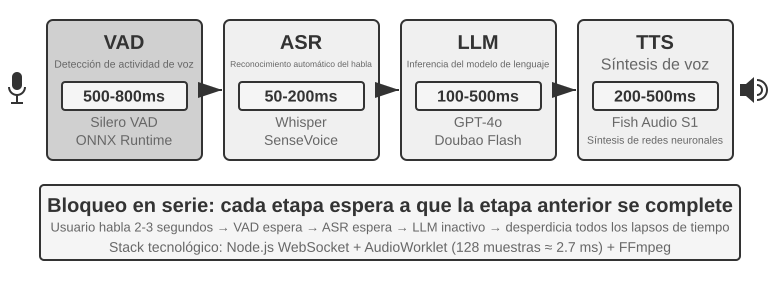
Los primeros asistentes de voz adoptaron este pipeline serial de cuatro etapas por una razón muy sencilla: ningún modelo único podía procesar simultáneamente las cuatro tareas de reconocimiento de voz, comprensión del lenguaje, pensamiento y síntesis de voz. La arquitectura modular permitió que cada componente se desarrollara y optimizara de manera independiente. Sin embargo, el costo de la modularidad es la acumulación de latencia: cada etapa debe esperar a que se complete la anterior antes de comenzar.
VAD es el punto de partida del pipeline y escucha continuamente el flujo de audio. El diseño más crítico es la Detección de Fin de Habla (End-of-Speech Detection): por lo general, se establece un umbral de silencio continuo de 500-800 ms. Si el usuario deja de hablar durante más de medio segundo, el VAD considera que el usuario ha terminado. Esto introduce el primer nivel de latencia y es difícil lograr un equilibrio: si el umbral se establece demasiado corto, una breve pausa del usuario para pensar se interpreta erróneamente como el final de la frase, truncándola; si se establece demasiado largo, el usuario debe esperar más de medio segundo tras terminar de hablar para recibir una respuesta.
ASR convierte la forma de onda de audio en texto. Modelos como Whisper o SenseVoice suelen requerir entre 50 y 200 ms para transcribir 5 segundos de audio cuando se despliegan modelos de tamaño pequeño o mediano en GPU; los modelos de mayor tamaño o los entornos de despliegue con recursos limitados pueden alcanzar entre 200 y 500 ms (el grupo de control del Experimento 9-3 pertenece a este último caso). El problema más crítico radica en que, durante todo el proceso de espera de VAD y transcripción de ASR, el LLM posterior permanece completamente inactivo, sin recibir información alguna y sin poder empezar a pensar de forma anticipada.
En la etapa de inferencia del LLM, incluso con una optimización adecuada, según la longitud del contexto, el tiempo hasta el primer token (TTFT, es decir, el tiempo de espera para que el modelo emita el primer carácter) suele requerir entre 100 y 500 ms; generar la primera frase corta adecuada para su emisión requiere continuar decodificando durante un tiempo adicional. Si se habilita el razonamiento (reasoning), el modelo suele tener que completar primero su pensamiento interno antes de emitir el primer token visible, lo que puede extender la espera a 5-10 segundos. Las implementaciones seriales tradicionales totalmente estrictas esperan a que el LLM emita la respuesta completa antes de entregar el texto al TTS.
TTS convierte el texto de la respuesta en voz; la síntesis de frases cortas suele requerir entre 200 y 500 ms. La Figura 9-2 utiliza una respuesta corta sin razonamiento habilitado para ilustrar cómo se acumula la latencia serial: VAD (500-800 ms) + ASR (50-200 ms) + LLM TTFT (100-500 ms) + Generación de frase corta por LLM (100-300 ms) + TTS (200-500 ms), sumando un total aproximado de 0.95 a 2.3 segundos. Esto es solo un intervalo indicativo bajo un criterio unificado; los valores reales dependen de la longitud de la entrada y la respuesta, el modelo, el hardware, la red y la carga.
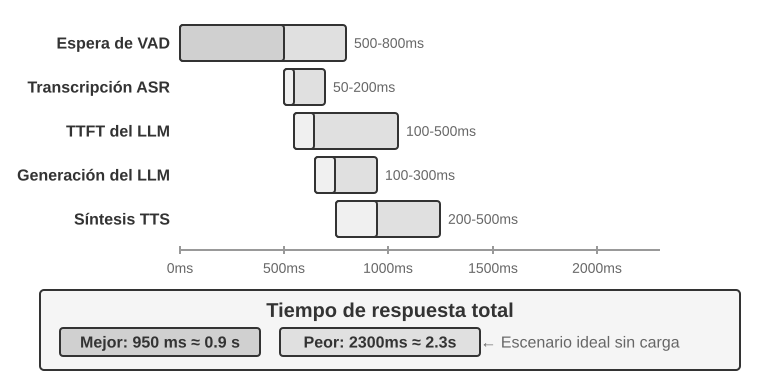
Una vez en producción, la latencia en cola empeorará aún más la situación. Esto sigue la misma lógica que hacer cola en un restaurante: cuanto más ocupada esté la cocina, mayor será el tiempo de espera, y el incremento no es lineal sino que se dispara drásticamente (Figura 9-3). Cuando el servidor no tiene ninguna cola de espera (es decir, en "vacío"), el tiempo necesario para procesar una solicitud se denomina latencia en vacío. Sin embargo, cuando llegan múltiples solicitudes simultáneamente, las solicitudes posteriores deben esperar en cola.
Intuitivamente, a mayor utilización, el tiempo de espera se disparará de forma no lineal. La relación matemática concreta proviene de la teoría de colas (aquí solo para comprensión intuitiva, sin necesidad de deducción rigurosa): Latencia total ≈ Latencia en vacío × 1/(1 - Utilización). La utilización se refiere a la proporción de tiempo que el servidor está ocupado. Por ejemplo, una utilización del 50% significa que el servidor pasa la mitad del tiempo procesando solicitudes y la otra mitad inactivo. Con un 50% de utilización, la latencia se duplica respecto a la latencia en vacío, y con un 80% de utilización aumenta a 5 veces; por esta razón, los servidores no pueden funcionar de manera continua bajo altas cargas.
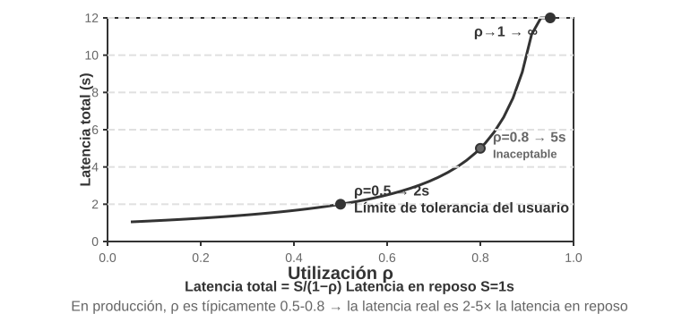
Experimento 9-1 ★: Construir un Agente de voz tradicional
Este experimento construye un sistema completo de diálogo por voz en tiempo real, permitiendo a los usuarios interactuar por voz con la IA a través del micrófono. El sistema adopta una arquitectura desacoplada cliente-servidor, comunicándose en tiempo real mediante WebSocket.
El flujo central sigue un patrón serial estricto: el cliente captura la entrada del micrófono y la envía en tiempo real al servidor vía WebSocket. El servidor ejecuta el modelo Silero VAD para la detección de actividad de voz, ofreciendo mayor precisión y resistencia al ruido en comparación con los métodos tradicionales de detección de volumen. Tras detectar aproximadamente 500 ms de silencio continuo, extrae el fragmento de audio para su procesamiento posterior.
Las etapas de ASR, LLM y TTS admiten la conmutación flexible entre múltiples proveedores, lo que permite a los desarrolladores seleccionar la combinación óptima según la latencia, la precisión y las condiciones de red locales.
Experimento 9-2 ★: Construir un Agente telefónico usando la API de voz de PineClaw
El Experimento 9-1 construyó un sistema de diálogo por voz en el navegador, pero en el mundo real muchas tareas del Agente requieren realizar llamadas telefónicas reales (contactar a atención al cliente para negociar una factura, reservar un restaurante o confirmar un pedido). El Capítulo 4 mostró a través del mecanismo de Channel de PineClaw cómo la arquitectura orientada a eventos redujo la latencia de respuesta de las notificaciones telefónicas de minutos a segundos; este experimento se centra en la construcción de llamadas de voz en sí. Tomando como ejemplo la API de Voz de PineClaw (desarrollada por el equipo de autores), las API de voz telefónicas de nivel de producción suelen encapsular todo el flujo de marcación, navegación IVR —es decir, menús telefónicos del tipo "presione 1 para consultas, presione 0 para operador"), diálogo y transcripción: tras proporcionar el número de teléfono, el objetivo y la información de contexto, el Agente de voz completa toda la llamada y devuelve un registro estructurado de la conversación.
Objetivo del experimento: Construir un Agente capaz de completar tareas a través de llamadas telefónicas reales, integrando PineClaw Voice como una herramienta en el bucle ReAct.
Solución técnica: Utilizar el SDK de Python de PineClaw Voice (
pine-voice) para dotar al Agente de la herramientamake_phone_call. El Agente recibe la descripción de la tarea del usuario (como "ayúdame a reservar una cita médica para mañana a las 3 p.m."), y a través del razonamiento ReAct decide: (1) qué número de teléfono necesita marcar; (2) el objetivo y la información clave de la llamada; (3) cómo informar los resultados al usuario al finalizar la llamada.Flujo de trabajo del Agente: El usuario dice "ayúdame a llamar a la clínica para reservar la cita de mañana" → El Agente piensa qué información necesita (teléfono de la clínica, hora de la cita, nombre del paciente) → Si la información es insuficiente, pide aclaraciones al usuario → Llama a la herramienta
make_phone_call→ PineClaw realiza la llamada telefónica, dialoga con la otra parte y completa la reserva → El Agente recibe el resumen y la transcripción de la llamada → Informa el resultado al usuario.Criterios de aceptación: Realizar con éxito una llamada de prueba (se puede marcar primero al propio teléfono móvil para verificar la conectividad). El Agente debe decidir autónomamente los parámetros de la llamada según la descripción de la tarea, y tras la llamada extraer correctamente la información clave (hora de la cita, número de confirmación, etc.) e informarla al usuario. Comparar la diferencia entre el uso directo de la API y la llamada a través del bucle ReAct del Agente: este último puede manejar casos de información incompleta (como buscar primero el número de teléfono si el usuario no lo proporcionó).
Este experimento muestra una dirección de aplicación importante para los Agentes de voz: el Agente no solo puede dialogar por voz con el usuario, sino también interactuar por teléfono con el mundo exterior en nombre del usuario. El Agente de voz de PineClaw ha sido entrenado específicamente para manejar esperas de horas, navegación en menús telefónicos y negociaciones complejas (imaginemos dejar que la IA espere en línea por ti al llamar al servicio al cliente de un operador hasta transferir con un humano), que son precisamente escenarios difíciles de abordar para los pipelines seriales tradicionales.
Streaming integral en el pipeline en cascada¶
La Figura 9-2 calcula la situación de serie pura donde "cada etapa se ejecuta por completo antes de pasar el relevo". Los sistemas de producción suelen mantener la división modular VAD-ASR-LLM-TTS, pero permiten que cada etapa produzca resultados incrementales lo antes posible para acortar el tiempo que tarda el usuario en escuchar la primera sílaba:
- ASR en streaming mientras se escucha: El reconocimiento en streaming produce transcripciones temporales continuas mientras el usuario habla, ocultando la mayor parte del cálculo de reconocimiento durante el proceso de habla; una vez finalizado el turno, aún se debe confirmar el texto final, ya que la transcripción temporal puede ser reescrita por el contexto posterior.
- Salida en streaming del LLM y segmentación de texto: Mientras el modelo genera texto, lo segmenta en pequeñas partes adecuadas para su emisión según la puntuación o la semántica; en cuanto se forma el primer fragmento, se entrega al TTS sin esperar a que se escriba la respuesta completa. Esto no reduce el TTFT del LLM ni puede omitir el razonamiento; lo que ahorra es el tiempo de "esperar a que se genere toda la respuesta".
- Síntesis incremental de audio en TTS: El TTS comienza a sintetizar en cuanto recibe el primer fragmento de texto y devuelve continuamente bloques de audio antes de que se haya generado toda la forma de onda. A partir de ahí, la generación del resto del texto por el LLM, la síntesis posterior en TTS y la reproducción del audio existente en el cliente pueden superponerse en paralelo.
Sin embargo, que "cada nivel sea en streaming" no significa que los tres modelos empiecen a trabajar simultáneamente para el mismo turno de conversación. En una cascada estándar sin especulación, las relaciones de dependencia siguen existiendo: el ASR puede trabajar continuamente mientras el usuario habla; una vez finalizado el turno y estabilizada la transcripción, el LLM genera la respuesta final; y solo después de que el LLM produce el primer fragmento de texto emitible, el TTS puede comenzar. Lo que realmente se superpone es "el habla del usuario con la transcripción de ASR" y "la generación del resto de la respuesta del LLM con la síntesis/reproducción de TTS", en lugar de que los cálculos de ASR, LLM y TTS sean completamente paralelos de principio a fin.
Los sistemas más agresivos realizan generación de arranque anticipado (preemptive/speculative generation): inician el LLM de forma anticipada basándose en transcripciones parciales relativamente estables; si la transcripción posterior cambia, cancelan, reinician o corrigen la generación. También se puede sintetizar la voz de forma anticipada, pero por lo general se espera a la confirmación del turno antes de reproducirla, para evitar que el Agente interrumpa al usuario mientras este aún no ha terminado de hablar. Frameworks como LiveKit Agents o Pipecat pueden dar soporte tanto a cascadas en streaming ordinarias como a este tipo de estrategias de especulación; el hecho de si ASR y LLM se superponen realmente depende de si el sistema implementa explícitamente mecanismos de envío, invalidación y rollback de transcripciones parciales, y no de que el simple hecho de activar la opción stream proporcione esto de forma automática.
La traslación a streaming ordinaria tampoco puede eliminar la espera en silencio de VAD ni la propia determinación de turnos. El ASR en streaming ya ha comenzado a trabajar en ese momento; lo que realmente se encuentra bloqueado por la determinación del turno es el envío de la transcripción final y la reproducción de la respuesta. La generación especulativa puede ocultar una parte de este cálculo, pero aún debe decidir cuándo es seguro empezar a hablar. Para reducir aún más esa espera, es necesario dirigirse a la percepción frontal y a la determinación del punto final en sí.
Percepción de voz en streaming: Sustituyendo VAD + ASR¶
Este frontal de percepción consta de dos etapas: VAD determina si el usuario ha terminado de hablar y ASR transcribe el audio a texto. En una arquitectura estrictamente en serie, ambas determinan conjuntamente cuándo se inicia el pipeline posterior y qué entrada recibe; en una arquitectura en streaming, aunque el ASR trabaja de forma anticipada, el envío del texto final y el momento en que se empieza a responder siguen estando restringidos por la determinación del punto final. La cascada tradicional VAD + ASR presenta tres problemas fundamentales:
- Acumulación de latencia: El VAD debe esperar entre 500 y 800 ms de silencio para confirmar que el usuario ha terminado, ya que no puede predecir el futuro y solo puede confiar en "esperar un poco" para distinguir entre "realmente ha terminado" y "solo se ha detenido a pensar".
- Pérdida de información: El VAD solo emite una señal binaria de "con sonido / sin sonido", perdiéndose por completo los detalles acústicos como cambios emocionales, fluctuaciones de tono, pausas de duda y ruido ambiental. El problema de los falsos diagnósticos es especialmente destacado en entornos complejos: si el usuario hace una pausa un poco más larga, se interpreta erróneamente como el final de la frase truncándola; los ruidos de fondo provocan activaciones falsas haciendo que el sistema empiece a procesar cuando nadie habla; y un simple "ajá" de asentimiento del usuario no permite determinar si pretende interrumpir o simplemente expresar acuerdo.
- Disminución de la precisión: El VAD corta el audio continuo en fragmentos independientes que envía por separado al ASR para su reconocimiento, destruyendo la continuidad del contexto. El contenido que requiere contexto previo y posterior para reconocerse correctamente (direcciones de correo electrónico, nombres de marca, nombres de personas, términos especializados) presenta un aumento significativo en la tasa de error (por ejemplo, si el usuario dicta el correo "john dot smith at gmail dot com", y "john" y "smith" se cortan en fragmentos diferentes, "smith" puede ser reconocido erróneamente como "miss" debido a la falta de contexto).
Los modelos de percepción de voz en streaming ofrecen una solución fundamental. Aclaremos primero el significado técnico de "streaming": que un modelo de voz pueda procesar en streaming depende de si el codificador es causal o por bloques (depende solo del audio que ya ha llegado, sin necesidad de ver toda la grabación) y de si el decodificador es incremental (emite una parte de los resultados por cada pequeño fragmento de audio recibido). Whisper no puede funcionar en streaming no por su método de decodificación (su decodificación es autorregresiva en sí misma), sino porque su codificador requiere un segmento de audio completo (fijo de 30 segundos, rellenado si es menor) para empezar a trabajar. También cabe señalar que el reconocimiento en streaming no es una tecnología nueva: los sistemas tradicionales de ASR en streaming representados por RNN-T y Conformer en streaming llevan mucho tiempo desplegados a gran escala en la industria (los subtítulos en tiempo real de los teléfonos móviles y la entrada de voz en los métodos de entrada utilizan este tipo de modelos) y no tienen relación con los LLM.
Esta sección se centra en una nueva ruta: percepción auditiva en streaming basada en LLM (realizando post-entrenamiento con un LLM de código abierto como columna vertebral para hacer que el modelo emita directamente respuestas a nivel semántico desde un flujo de audio continuo, unificando el "reconocimiento" y la "comprensión" en un solo modelo). Se trata de una actualización del ASR en streaming tradicional y no del invento de la tecnología en streaming: la latencia del reconocimiento incremental se mantiene igualmente en la escala del tiempo de inferencia de un solo paso (de decenas a un par de cientos de milisegundos), pero lo que ve el modelo ya no son fragmentos aislados fragmentados por VAD, sino un flujo de audio continuo desde el inicio de la conversación hasta el momento actual, pudiendo realizar aprendizaje en contexto (In-Context Learning) basado en el contexto completo, lo que mejora significativamente la precisión en el reconocimiento de información personal, términos profesionales y hábitos de pronunciación del usuario.
Otra ventaja clave de esta ruta es que hereda el conocimiento del mundo y la capacidad de razonamiento basado en el sentido común del LLM (después de todo, el modelo backbone ha visto enormes cantidades de texto). Por ejemplo, el modelo sabe que si "manzana" va seguido de "conferencia de prensa", muy probablemente se refiere a Apple y no a la fruta; esta mejora del conocimiento hace que la precisión en el reconocimiento de información de alto valor como montos, nombres de lugares y nombres de marcas supere con creces al ASR tradicional. Esta ruta ya cuenta con modelos implementables en producción, como Ultravox de Fixie (enviando audio directamente al backbone del LLM para emitir texto y tokens semánticos); los modelos nativos de audio como Qwen2-Audio y Qwen2.5-Omni de Alibaba utilizados en el experimento de esta sección pertenecen a la misma categoría.
Sin embargo, sustituir el VAD no requiere necesariamente recurrir a un gran modelo de audio completo. Si solo se desea resolver el primer problema (determinar si el usuario ha terminado de hablar o no), existe una vía más ligera: incrustar este "juicio de turno" directamente en el propio reconocedor 2. El método consiste en añadir un LoRA sobre un modelo de reconocimiento en streaming de código abierto pequeño, permitiéndole evaluar combinando la semántica y el silencio si "esta frase ya ha expresado un significado completo" mientras transcribe (puesto que las pausas dentro del turno, como hacer una pausa al dictar un número de teléfono, a menudo son más largas que los intervalos entre turnos, por lo que confiar únicamente en un umbral de silencio inevitablemente perjudica ambos lados). Una conclusión aún más interesante es que cuando el modelo oscila constantemente sobre "si debe cerrar la frase", la causa raíz no suele ser la estructura del modelo, sino que las etiquetas de entrenamiento se etiquetaron utilizando una "perspectiva divina" (utilizando audio que aparece después del punto de decisión durante el etiquetado, mientras que el modelo en línea no puede ver el futuro); al cambiar cada etiqueta para que se etiquete "utilizando únicamente la información disponible en el momento de la decisión", esa falsa oscilación desaparece. Esto coincide con una observación sobre el post-entrenamiento del Capítulo 7: en muchas ocasiones, los datos son más cruciales que la arquitectura. Esta ruta más ligera también cuenta con implementaciones a nivel de producción: Flux de Deepgram y Universal-Streaming de AssemblyAI incrustan el punto final y el juicio de turno directamente en el modelo de reconocimiento en streaming, diseñados específicamente para Agentes de voz; en el lado del código abierto, LiveKit y Pipecat proporcionan modelos de detección semántica de turnos.
El modelo no solo emite texto, sino también una serie de marcadores especiales de eventos acústicos (tokens dedicados introducidos durante el entrenamiento del modelo, que el modelo aprende a emitir automáticamente al detectar el evento acústico correspondiente). Los tipos más comunes son los siguientes:
<speak_start/end>: Determina el inicio y fin del habla basándose en una evaluación integral de la semántica y la acústica, en lugar de una simple detección de silencio.<interrupt>: Distingue si el usuario desea realmente interrumpir o si simplemente está asentintiendo o siendo interferido por el ruido de fondo.<emotion:happy/frustrated>: Marcadores emocionales.<laugh>/<sigh>: Señales paralingüísticas como risas y suspiros.<music>/<noise>: Sonidos ambientales.
Estos marcadores y los tokens de texto forman un flujo de eventos unificado que se envía conjuntamente a la capa de pensamiento.
Input audio: "Um, actually I think... no wait, let me reconsider."
Model output stream:
<speak_start> Um, <emotion:hesitant> actually I think...
<silence:500ms> no wait, <emotion:confident> let me reconsider <speak_end>
Téngase en cuenta que el modelo no solo emite la transcripción de texto, sino también marcadores de eventos de voz (inicio/fin de habla, cambios emocionales, intervalos de silencio). Los frameworks de Agentes pueden utilizar estos marcadores para lograr interacciones más naturales (por ejemplo, ofreciendo opciones proactivamente cuando detectan dudas en el usuario).
Experimento 9-3 ★: Simulación de percepción de voz en streaming usando Qwen2-Audio
Es necesario aclarar primero el diseño del experimento: Qwen2-Audio es en sí mismo un modelo que no funciona en streaming y recibe entradas en bloques completos. Este experimento adopta un procesamiento por bloques para simular el procesamiento en streaming: corta el flujo de audio continuo en pequeños bloques de longitud fija, enviando cada bloque junto con el contexto de audio acumulado previamente al modelo; el modelo genera progresivamente texto y tokens de eventos acústicos (como risas, pausas y otras señales no verbales), midiendo la latencia desde que se envía cada bloque hasta que se produce el texto. Aquí hay un costo clave: el codificador de Qwen2-Audio no es incremental, por lo que cada vez que procesa un nuevo bloque debe volver a codificar desde el principio todo el audio acumulado anteriormente. Por lo tanto, cuanto más larga es la conversación y más audio se acumula, mayor es la latencia de codificación de un solo bloque (esta es la diferencia esencial entre la "simulación de streaming" y el "streaming real", el cual utiliza codificadores incrementales o causales que solo codifican de forma incremental un pequeño segmento de audio recién llegado). Este diseño permite demostrar las ganancias de precisión que aporta la "percepción continua que conserva el contexto completo", pero los números de latencia solo reflejan la granularidad del bloque y la velocidad de inferencia, no siendo equivalentes al tiempo hasta el primer paquete de un modelo diseñado verdaderamente para streaming (como Qwen3-Omni con codificación por bloques); los lectores interesados pueden rehacer este experimento utilizando este último. La solución de comparación es el pipeline tradicional VAD + Whisper ASR. Se prueban tres tipos de escenarios: diálogo normal, frases largas con pausas y diálogo con ruido de fondo.
Resultados: La latencia de reconocimiento incremental de la solución de simulación por bloques se puede controlar en el orden de uno a dos cientos de milisegundos (dependiendo de la longitud del bloque y del hardware), mientras que la solución tradicional necesita esperar a que el VAD confirme la finalización (600 ms) más la inferencia de Whisper (aproximadamente 200-500 ms en la configuración de este experimento), sumando un total de 800-1100 ms. En el escenario con pausas, el VAD juzgó erróneamente que se había terminado de hablar en la primera pausa larga, dividiendo la frase en dos segmentos reconocidos por separado; "aproximadamente a las dos" fue reconocido erróneamente como "aproximadamente a las cero" debido a la falta de contexto. En cambio, la solución por bloques mantuvo el contexto completo y reconoció la frase completa correctamente. En el escenario de ruido de fondo, Qwen2-Audio emitió el token
<|noise|>marcando la presencia de ruido sin interrumpir el reconocimiento, mientras que el VAD tradicional fue activado erróneamente por el ruido, haciendo que el proceso de reconocimiento se iniciara de forma prematura.
Paradigma 2: Modelos omnimodales de extremo a extremo (Omni)¶
Al revisar todo el pipeline en cascada, se observa que incluso si el frontal de percepción se sustituye por la percepción de voz en streaming, al final sigue distribuyendo el "escuchar, pensar y hablar" a tres modelos independientes conectados entre sí mediante una interfaz discreta. Por muy ancha que sea esta interfaz, no es más que unos pocos tokens semánticos y algunos marcadores acústicos aislados: las emociones, el tono y la entonación actuales del hablante, así como el sonido ambiental y la música de fondo, se pierden casi por completo durante la transferencia; además, al entrenarse y optimizarse cada una de las tres etapas de forma independiente, resulta difícil coordinarlas entre sí. Los modelos omnimodales de extremo a extremo (Omni) toman una ruta diferente: utilizan un único modelo para "escuchar" directamente el audio, "pensar" la respuesta y "hablarla", unificando las tres etapas en una sola (Figura 9-4). Siempre que los datos de entrenamiento sean suficientes, el espacio latente (Latent Space) interno del modelo puede transmitir directamente esta información paralingüística al extremo de generación más allá del texto: la latencia es menor y la prosodia y la emoción se conservan. El compromiso radica en que: el pipeline en cascada tiene módulos claros, cada etapa se puede ajustar de forma independiente y tiene buena explicabilidad; el modelo de extremo a extremo tiene menor latencia y puede retener información no textual, a costa de mayores requisitos de datos de entrenamiento y menor explicabilidad.
También es necesario añadir una dimensión que a menudo se pasa por alto: la ventaja de extremo a extremo se manifiesta principalmente en la latencia, pero no es necesariamente superior en la dimensión de precisión. Una solución que vale la pena comparar es la auto-cascada (self-cascade): el mismo modelo transcribe primero el audio en texto estructurado y luego realiza el razonamiento basándose en dicho texto; cuál de las dos opciones tiene mayor precisión en comparación con responder de extremo a extremo de una sola vez depende de la tarea específica. Su regla se puede resumir de la siguiente manera: cuando la respuesta está determinada principalmente por el contenido semántico —es decir, "qué se dijo") y el texto intermedio es suficiente para transportar la información relevante de la tarea, la precisión de la auto-cascada es equivalente o incluso superior a la de extremo a extremo, siendo esta ventaja especialmente destacada en modelos con menor capacidad de percepción; por el contrario, cuando la respuesta depende en gran medida de pistas no verbales difíciles de representar mediante texto (tono, emoción, sonido ambiental), el enfoque de extremo a extremo muestra una ventaja clara. Más importante aún, la ventaja o desventaja entre ambos se puede determinar de antemano según la naturaleza de la tarea, en lugar de atribuirse simplemente a que "el extremo a extremo es más avanzado". De esto se puede derivar un principio de diseño: la clave que determina el rendimiento a menudo no radica en si se introduce la representación intermedia como un cuello de botella, sino en la información que transporta dicho cuello de botella (si se eleva el texto intermedio de una simple transcripción a una representación estructurada con marcadores paralingüísticos como emoción, velocidad del habla y sonido ambiental, la ventaja de precisión original de extremo a extremo suele reducirse en consecuencia), lo cual es coherente con lo propuesto anteriormente en "Percepción de voz en streaming" sobre que "la capa de percepción no debería emitir únicamente texto puro" 3.
Sin embargo, por muy fuerte que sea Omni, en esencia solo sintetiza tres modelos en uno y no anula la suposición de "hablar por turnos": sigue dependiendo de VAD para dividir el turno de palabra (deteniéndose en cuanto detecta que el usuario habla y comenzando a hablar en cuanto el usuario hace silencio). Así, vuelve a surgir ese problema familiar: cuando el usuario dicta una serie de números y hace una breve pausa a mitad de camino, Omni determina que la otra parte ha terminado de hablar e interrumpe forzadamente. La percepción de voz en streaming explicada anteriormente puede elevar la determinación del turno desde la duración del silencio hasta el nivel semántico, mitigando en gran medida este tipo de falsos diagnósticos, pero al fin y al cabo eso es solo una reparación local dentro del marco de "turnos", sin cancelar los turnos en sí. Para salir de este predicamento de forma fundamental, no se debe reparar dentro del marco de "turnos", sino permitir que el modelo escuche y hable al mismo tiempo y decida autónomamente cuándo hablar, sin que exista una conmutación rígida sobre "a quién le toca hablar".
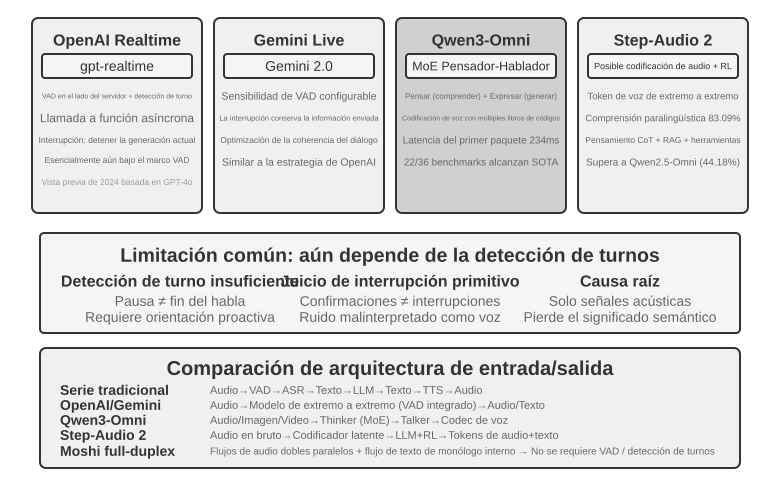
La API OpenAI Realtime se aproxima a extremo a extremo a nivel de modelo (el modelo procesa audio de forma nativa), pero en el nivel de control de interacción aún depende del VAD tradicional, siendo una solución intermedia de transición hacia el extremo a extremo completo. Inicialmente (versión preview de 2024) se ejecutaba sobre GPT-4o, pero tras su disponibilidad general (GA) en 2025 cambió a un modelo dedicado exclusivamente a la voz llamado gpt-realtime (ya no es un modo de GPT-4o, sino un modelo optimizado por separado para voz en tiempo real). La API habilita por defecto el VAD en el servidor, juzgando automáticamente cuándo el usuario empieza y termina de hablar. Admite interrupciones en la conversación: al detectar que el usuario empieza a hablar, detiene inmediatamente la generación de voz actual, al igual que cuando dos personas conversan cara a cara e interrumpe una parte, la otra se detiene de forma natural. gpt-realtime también introdujo llamadas a funciones asíncronas: el modelo puede continuar hablando con el usuario mientras espera los resultados de las herramientas, ocultando la latencia de las herramientas dentro del proceso de conversación. Todo esto mejora la experiencia, pero la esencia sigue siendo optimizar dentro del marco de VAD. La API Gemini Live sigue una idea similar, admitiendo la configuración de la sensibilidad de VAD y conservando la información enviada durante las interrupciones para garantizar la continuidad de la conversación.
Qwen3-Omni adopta la arquitectura Thinker-Talker: divide el pensamiento (comprensión y razonamiento) y la expresión (generación de voz) en dos módulos especializados, unificando la percepción y generación de texto, imágenes, audio y video. La baja latencia del primer paquete de Qwen3-Omni proviene de la arquitectura del extremo de generación (Talker): genera tokens de audio de forma progresiva mediante autorregresión multicódigo, colaborando con un codec causal para decodificar incrementalmente estos tokens en formas de onda. Por lo tanto, en cuanto el módulo de pensamiento produce texto, Talker puede sintetizar la voz de forma en streaming a continuación, sin esperar a que se genere toda la respuesta. Según los informes oficiales, su latencia teórica de primer paquete en arranque en frío es de aproximadamente 234 ms, admitiendo la comprensión de 19 idiomas y la generación de 10 idiomas, liderando en 22 de las 36 pruebas de referencia de audio y video.
Step-Audio 2 toma una ruta diferente: procesa directamente la entrada de audio original y emite texto y audio, logrando un verdadero diálogo de voz de extremo a extremo. No solo comprende lo que se dijo (información semántica), sino que también percibe cómo se dijo (información paralingüística), como si la emoción del hablante es de alegría o enojo, si la velocidad del habla es apresurada o dudosa, si el tono es ascendente o grave, así como el sonido ambiental y la música de fondo. Genera respuestas expresivas a través del pensamiento y el aprendizaje por refuerzo, e integra mecanismos de RAG y herramientas externas (búsqueda web, búsqueda de audio). Según el artículo técnico de Step-Audio 2, en su benchmark de comprensión paralingüística StepEval-Audio-Paralinguistic, la precisión de Step-Audio 2 alcanzó el 83.09%, superando al modelo omnimodal de código abierto contemporáneo Qwen2.5-Omni (44.18%), y siendo superior a GPT-4o Audio (43.45%) y Kimi-Audio (49.64%).
Step-Audio R1 es un trabajo posterior de la serie Step-Audio que, sobre la base de la arquitectura de diálogo de voz de extremo a extremo de Step-Audio 2, internaliza aún más la capacidad de pensamiento directamente en el modelo de audio, representando una evolución progresiva de la misma ruta técnica.
Paradigma 3: Modelos de interacción full-duplex (Full-Duplex / Interactivo)¶
El Paradigma 2 combinó los tres modelos en uno solo, pero siguió manteniendo la suposición de "hablar por turnos": o habla el usuario o habla el modelo, y el punto de conmutación se adivina mediante VAD o semántica. Sin embargo, en algunos escenarios la interacción no es una conversación por turnos de "una frase tú, una frase yo". La interpretación simultánea es un ejemplo: el intérprete no espera a que el hablante termine la frase completa para empezar a hablar, sino que escucha y organiza en su mente al mismo tiempo; en cuanto el significado de un grupo sintáctico está completo, lo traduce inmediatamente, superponiéndose la escucha y la traducción de forma continua. Los juegos de ritmo donde se golpea el tambor al ritmo de la música son aún más extremos: el oído debe seguir continuamente el flujo ininterrumpido de música, las manos deben golpear a tiempo en el pulso y además anticipar el siguiente pulso; aquí ni siquiera existe el concepto de "turno", siendo la entrada un flujo continuo que nunca se detiene. Este tipo de tareas plantea un desafío fundamental para el modo turn-by-turn: requieren que la escucha, el pensamiento y la acción se realicen simultáneamente, mientras que la premisa del modo por turnos es precisamente ubicar los tres en diferentes franjas horarias sucesivas. Los modelos full-duplex llevan la ruta de "librarse de VAD" a su destino lógico: simplemente cancelan la suposición de "turnos", permitiendo que el modelo escuche y hable de forma continua y simultánea.
El pionero en la investigación fue Moshi de Kyutai (2024). Modela en paralelo dos flujos de audio (la voz del usuario y la propia voz del modelo), complementados con un flujo de texto de "monólogo interior" para mejorar la calidad lingüística de la voz generada. Al estar escuchando en cualquier momento, el habla superpuesta y las interrupciones en cualquier instante se convierten en comportamientos naturales, sin necesidad de ninguna lógica explícita de detección de interrupciones, con una latencia de extremo a extremo de unos 200 ms, cercana al ritmo natural de la conversación humana.
En 2026, Thinking Machines Lab, fundada por Mira Murati, presentó en vista previa una nueva categoría que denominaron Modelos de Interacción (Interaction Model) 4, y expresaron claramente la afirmación detrás del modo full-duplex: la interactividad no debería envolver al modelo como un harness externo del tipo VAD, sino estar integrada en el propio modelo (en sus propias palabras, "para que la interactividad se expanda junto con la inteligencia, la interactividad debe convertirse en parte del propio modelo"). En la arquitectura, esto se traduce en microturnos (micro-turn): el modelo no espera a terminar una frase completa, sino que adopta segmentos de aproximadamente 200 ms, "leyendo 200 ms y generando 200 ms" continuamente, permitiendo que varios flujos de audio, video y texto avancen entrelazados. Esta granularidad es un compromiso deliberado: lo suficientemente fina para que el silencio, la superposición y la interrupción se conserven como flujos continuos en el contexto del modelo, sin fronteras de turno artificiales a las cuales amoldarse; y lo suficientemente gruesa para procesar de forma concurrente múltiples modalidades en bloques, manteniendo la latencia dentro del rango perceptible en tiempo real. Precisamente porque la interacción se incorpora al interior del modelo, comportamientos como "escuchar mientras se habla" y "observar e interrumpir a mitad de camino", que antes requerían un harness especializado para montarse, ahora forman parte de las funciones internas del modelo y fortalecen junto con él: el primer modelo, TML-Interaction-Small, entrena las tres vías de flujo desde cero simultáneamente; en cuanto percibe que el usuario está escribiendo un bloque de código con un error o que alguien entra en la imagen, puede empezar a hablar proactivamente.
Su forma de conectarse con el "pensamiento lento" también es bastante representativa. El modelo de interacción solo se encarga de mantener la conversación en línea; en cuanto encuentra una pregunta que requiere razonamiento profundo o llamada a herramientas, la delega a un modelo de razonamiento más fuerte en segundo plano (enviando no una consulta aislada, sino todo el contexto de la conversación). Mientras el modelo en segundo plano razona, los resultados se transmiten en streaming de regreso, y el modelo de interacción elige un momento adecuado que no interrumpa al usuario para tejerlos de forma natural en la conversación, mientras continúa respondiendo con normalidad, contestando a preguntas de seguimiento y manteniendo el turno de palabra. De este modo, se logra con la "latencia de un modelo no pensante" la "capacidad de planificación, herramientas e inteligencia de un modelo de razonamiento". Según los informes oficiales, la latencia de conmutación de turnos de TML-Interaction-Small (MoE de 276B parámetros, 12B activos) es tan baja como aproximadamente 0.40 segundos (GPT-realtime-2.0 ronda los 1.18 segundos), superando ampliamente a los competidores con puntuaciones casi nulas en las pruebas que evalúan la proactividad visual; al momento de escribir este texto, se encuentra en fase de vista previa de investigación.
En el mismo año, GPT-Live de OpenAI llevó el modo full-duplex a escala de producción, desplegándose a nivel mundial como el nuevo modelo por defecto para la voz de ChatGPT. Ya no considera la conversación como una serie de turnos de mensajes discretos, sino que genera salidas continuamente mientras procesa entradas continuamente, por lo que puede tomar muchas decisiones de interacción por segundo: si debe empezar a hablar, continuar escuchando, hacer una pausa, interrumpir o llamar a una herramienta. En la práctica, cuando el usuario piensa, el modelo espera en silencio en lugar de interrumpir, utiliza asentimientos como "ajá" o "sí" para indicar que está escuchando, y puede asumir tareas como la traducción en tiempo real, que requieren escuchar y hablar simultáneamente.
GPT-Live también siguió la misma ruta de división del trabajo entre rápido y lento: desacoplar la "interacción en tiempo real" del "pensamiento profundo". Al encontrarse con situaciones que requieren búsqueda, razonamiento u operaciones de Agente más complejas, GPT-Live (encargado de la interacción) delega la tarea al modelo de vanguardia en segundo plano (GPT-5.5 al momento de su lanzamiento), mientras continúa manteniendo la fluidez de la conversación, esperando a que el modelo en segundo plano emita el resultado para traerlo de vuelta a la conversación. Las versiones GPT-Live-1 y mini utilizan GPT-5.5 Instant en segundo plano, mientras que los niveles Medium y High llaman a GPT-5.5 con pensamiento habilitado, permitiendo a los usuarios elegir entre "rápido" y "profundo" según sus necesidades. Esta "división del trabajo entre rápido y lento" es precisamente el tema que se desarrollará en la siguiente sección sobre "Compromisos en las arquitecturas de pensamiento".
Al revisar la cadena narrativa de "sustituir el VAD" de este capítulo: el VAD adivinaba la transición del turno de palabra mediante umbrales de silencio, la percepción en streaming (véase la sección anterior Paradigma 1 "Percepción de voz en streaming") elevó el juicio de transición al nivel semántico, y el modelo full-duplex disolvió por completo la "transición" en sí (al estar escuchando continuamente, la "interrupción" deja de ser un evento que requiere un procesamiento especial, por lo que la cadena de procesamiento de barge-in prescinde de la mayoría de sus etapas en la arquitectura). Este es el punto final hasta el momento de redactar este libro en la línea narrativa de "sustituir el VAD".
Compromisos en las arquitecturas de pensamiento: De la separación a la unificación¶
Lo que realmente debe resolverse es la contradicción entre la respuesta en tiempo real y el pensamiento profundo: el usuario espera respuestas en milisegundos, mientras que los problemas complejos requieren tiempos de pensamiento de varios segundos. ¿Cómo mantener una baja latencia al tiempo que se permite al modelo pensar con la suficiente profundidad? Esta contradicción no es exclusiva de las arquitecturas de extremo a extremo; el pipeline en cascada tampoco puede evitarla.
Las tres soluciones siguientes no son iteraciones tecnológicas lineales: son compromisos de diseño orientados a diferentes condiciones de restricción que coexisten en la práctica, y la elección de cuál adoptar depende de las exigencias de latencia y profundidad de pensamiento del escenario de aplicación. Es necesario señalar primero la diferenciación entre las tres: la Solución 1 y la Solución 2 son en esencia una división del trabajo entre rápido y lento basada en "dos modelos independientes concurrentes", que no depende del extremo a extremo y puede aplicarse incluso sobre un pipeline en cascada; solo la Solución 3 internaliza verdaderamente el pensamiento dentro del modelo de extremo a extremo.
Vale la pena señalar que para 2026, la ruta de "desacoplamiento rápido-lento" se ha convertido en la opción dominante en los productos de voz de vanguardia y cuenta con un nombre específico. Thinking Machines Lab la denomina "Modelos de Interacción (Interaction Models)" (un modelo de interacción en tiempo real acoplado a un modelo de razonamiento asíncrono en segundo plano); Grok Voice "Think Fast" de xAI, el Agente de voz de Pine AI y la "delegación" de GPT-Live vista en la sección anterior siguen todos la misma ruta de "rápido en primer plano para mantener la conversación, lento en segundo plano para razonamiento profundo". La elección del desacoplamiento en lugar de "entrenar un modelo todopoderoso" responde a una razón práctica: los modelos de razonamiento de vanguardia se iteran cada pocos meses, mientras que la capacidad de interacción en tiempo real requiere datos y objetivos de entrenamiento especializados. Intentar meter ambos en el mismo modelo equivale a hacerle perseguir un blanco en movimiento, corriendo además el riesgo de diluir la capacidad de razonamiento más valiosa 5. Por el contrario, mientras se mantenga el modelo de razonamiento más fuerte intacto en segundo plano y solo se entrene un modelo de interacción ligero en primer plano, se podrá utilizar siempre el "cerebro" más potente del momento (esta es precisamente la razón por la que GPT-Live enfatiza la "capacidad de cambiar de forma sostenible al último modelo de vanguardia"). A continuación veremos las tres soluciones en orden de menor a mayor fuerza del mecanismo de coordinación.
Enfoque 1: Pensamiento rápido para responder al momento, pensamiento lento para contestar en profundidad¶
El pensamiento rápido y el lento se ejecutan en paralelo (Figura 9-5): el pensamiento rápido ofrece una respuesta de relleno en menos de 500 ms (similar a cuando una persona dice primero "déjame pensar"), mientras que el pensamiento lento dedica 5-10 segundos en segundo plano a realizar un pensamiento profundo antes de ofrecer una respuesta completa. La tecnología utilizada por el pensamiento lento se denomina "escalado de cómputo en tiempo de prueba" (test-time scaling); en términos sencillos, consiste en permitir que el modelo "piense un poco más" al responder: en lugar de dar la respuesta en un solo paso, se desglosa la idea, se deduce paso a paso y se verifican los resultados como haría un humano al resolver un problema de matemáticas, intercambiando más pasos de cómputo por una respuesta de mayor calidad.
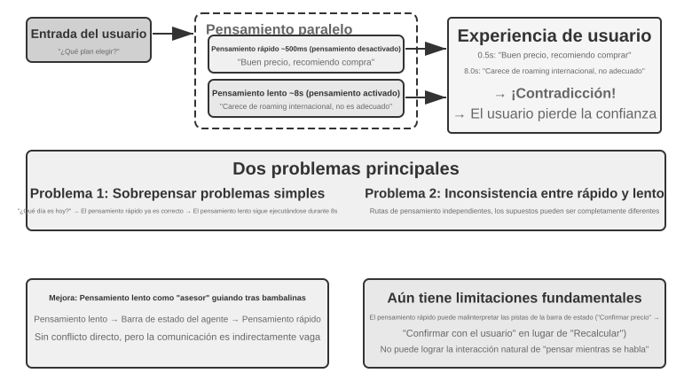
Problema 1: Sobrepensamiento en preguntas sencillas. Si el usuario pregunta "¿qué día es hoy?", el pensamiento rápido ya ha respondido correctamente "miércoles" en 500 ms, pero el pensamiento lento continúa ejecutando sus 10 segundos completos de pensamiento para volver a repetir "miércoles". Esto no solo desperdicia recursos de cómputo, sino que, lo que es peor, destruye el ritmo de la conversación: el usuario ya ha obtenido la respuesta y se dispone a pasar al siguiente tema, solo para ser interrumpido por una respuesta repetida. Problema 2: Inconsistencia entre rápido y lento. Ambos se ejecutan de forma independiente y paralela; aunque ven el mismo contexto, sus rutas de pensamiento pueden ser completamente distintas: el pensamiento rápido da una respuesta preliminar basada en cierta suposición, mientras que el pensamiento lento descubre que esa suposición no se sostiene y llega a la conclusión opuesta. El usuario escucha respuestas contradictorias con pocos segundos de diferencia, lo que destruye instantáneamente la confianza. La causa fundamental radica en que la Solución 1 divide la conversación en dos procesos de pensamiento independientes en lugar de una actividad cognitiva coherente, careciendo de un mecanismo de coordinación entre lo rápido y lo lento.
<user>¿Este paquete es adecuado para mí?</user>
<!-- Pensamiento rápido tras 0.5 segundos -->
<assistant（pensamiento rápido）>Este paquete tiene un precio muy conveniente, le sugiero comprarlo.</assistant>
<user>De acuerdo, entonces yo...</user>
<!-- Pensamiento lento completado tras 8 segundos -->
<assistant（pensamiento lento）>Un momento, he descubierto que a este paquete le falta la función de roaming internacional que usted necesita, por lo que podría no ser adecuado.</assistant>
<user>（enojado） ¡¿Al final me sugieres comprarlo o no?!</user>
Enfoque 2: Pensamiento rápido para la interacción, pensamiento lento para asesorar¶
La Solución 2 permite que el pensamiento lento vea la salida del pensamiento rápido y proporcione sugerencias al pensamiento rápido a través del Agent Status Bar (el mecanismo de inyección dinámica de metainformación presentado en el Capítulo 2), en lugar de hablar directamente con el usuario. En comparación con la Solución 1, presenta dos mejoras: el pensamiento lento se ejecuta de forma asíncrona en segundo plano, aprovechando los intervalos del habla para continuar pensando; al poder ver la salida del pensamiento rápido, no entra en conflicto directo, sino que se retira a un segundo plano para actuar como "asesor". La delegación de GPT-Live y el Agente de voz de Pine AI mencionados anteriormente son ejemplos de la Solución 2 en producción: el modelo de razonamiento en segundo plano transmite las conclusiones a través de un canal de texto simplificado al modelo de interacción en primer plano, y este último decide cuándo y con qué palabras comunicárselo al usuario.
Sin embargo, esta solución sigue teniendo limitaciones fundamentales. Es posible que el pensamiento rápido no obedezca las instrucciones: la comunicación entre dos instancias de pensamiento independientes es indirecta y difusa. El pensamiento rápido puede malinterpretar la sugerencia recibida a través del Agent Status Bar; por ejemplo, entendiendo "es necesario volver a confirmar el precio" como "preguntar al usuario si acepta este precio" en lugar de "el precio se calculó mal y debe recalculárse". Imposibilidad de obtener resultados intermedios de pensamiento: durante los 10 segundos de pensamiento del sistema lento, se han producido numerosas conclusiones intermedias valiosas que el pensamiento rápido no puede ver en absoluto, teniendo que esperar a que se emita el Agent Status Bar final. Si el usuario vuelve a preguntar o interrumpe antes de que el pensamiento lento termine, el pensamiento rápido solo puede responder basándose en su propia comprensión limitada. Esto es como si dos personas colaboraran para resolver un problema pero solo pudieran comunicarse pasándose notas de papel, sin poder ver el borrador del otro.
La Solución 2 también enfrenta un problema teórico fundamental: la imposibilidad de lograr "pensar mientras se habla". Cuando los seres humanos enfrentan problemas complejos, no piensan primero toda la respuesta en la cabeza para luego decirla de un tirón, sino que piensan una parte y dicen una parte: "Esta pregunta es muy interesante... (pausa para pensar) En primer lugar debemos considerar... (continúa pensando) En segundo lugar...". El pensamiento rápido de la Solución 2 solo puede decir palabras de rellenado para esperar a que el pensamiento lento produzca un resultado, sin poder intercalar de forma natural el proceso de pensamiento en la conversación.
Enfoque 3: Unificación de extremo a extremo de pensamiento y expresión (caso de estudio: Step-Audio R1)¶
Aunque la Solución 2 resuelve el problema de espera del pensamiento lento, en términos de arquitectura sigue siendo un esquema de "pensar primero y hablar después": el pensamiento y la expresión siguen siendo dos procesos separados, imposibilitando pensar y hablar al mismo tiempo como un ser humano. Para romper esta limitación fundamental, es necesario internalizar la capacidad de pensamiento directamente en el modelo.
Step-Audio R1 propone una solución radicalmente diferente en esta dirección: internaliza la capacidad de pensamiento directamente en el modelo de lenguaje de audio de extremo a extremo, logrando un verdadero "pensar mientras se habla" a través de una arquitectura de doble cerebro. En realidad consta de dos mecanismos complementarios que resuelven dos problemas diferentes: la Destilación de Razonamiento Anclado en la Modalidad (MGRD) resuelve primero el "pensar correctamente" (haciendo que el modelo razone basándose en características acústicas reales y no en transcripciones de texto); la Arquitectura de Doble Cerebro MPS resuelve luego el "hablar a tiempo" (permitiendo que el pensamiento y la expresión funcionen en paralelo, logrando un pensar mientras se habla con baja latencia). El primero es la premisa del segundo: solo cuando el pensamiento mismo está arraigado en el sonido, el pensar mientras se habla adquiere un valor real. A continuación los desarrollamos en orden.
El problema del pensamiento sustituto por texto. En condiciones ideales, un modelo de voz debería analizar directamente las características del sonido (como tono, ritmo, entonación) para comprender la emoción o intención del hablante. Sin embargo, en la práctica muchos modelos toman un atajo: existe un fenómeno contraintuitivo en los modelos de lenguaje de audio actuales según el cual, cuanto más larga es la cadena de pensamiento (CoT), peor es el rendimiento. El equipo de Step-Audio R1 descubrió que la causa raíz es el "Pensamiento Sustituto por Texto" (Textual Surrogate Reasoning, es decir, usar información de texto en "sustitución" de información acústica para el análisis): el modelo, al "pensar", realiza en realidad un razonamiento a nivel semántico basado en la transcripción de texto, en lugar de analizar verdaderamente las características acústicas. Por ejemplo: al pedirle al modelo que juzgue la emoción de una canción, analiza que "la letra menciona tristeza", en lugar de que "la melodía en modo menor junto con el perfil de tono descendente transmite una sensación de melancolía". Esta desalineación modal proviene de los datos de entrenamiento: los datos CoT (Chain-of-Thought) de la mayoría de los modelos de audio son generados por modelos de texto, heredando de forma natural el modo de pensamiento de texto puro.
La Destilación de Razonamiento Anclado en la Modalidad (MGRD, Modality-Grounded Reasoning Distillation) resuelve este problema mediante la automejora iterativa (Figura 9-6). Aunque el nombre es complejo, la idea central es intuitiva: filtrar los procesos de pensamiento que "realmente escuchan el sonido" y usarlos para entrenar al modelo, haciendo que el modelo aprenda a analizar con los oídos como un profesor de música, en lugar de limitarse a mirar la letra como un editor de texto. Específicamente consta de tres pasos:
- Se permite que el modelo actual genere múltiples procesos de pensamiento diferentes para el mismo fragmento de audio y luego se filtran aquellos que realmente se basan en características acústicas. ¿Cómo se filtran? Observando si el contenido del pensamiento menciona parámetros de sonido específicos. Por ejemplo, ante una entrada de voz enojada, el pensamiento basado en texto es: "El usuario dijo palabras negativas como 'pésimo', por lo que se determina que está enojado" (esto es solo analizar el contenido del texto); mientras que el pensamiento basado en características acústicas es: "La velocidad del habla es un 40% más rápida de lo normal, el volumen ha subido notablemente y el tono se ha vuelto agudo" (esto es realmente "escuchar" el sonido). MGRD filtra estos últimos.
- Se utilizan estos datos de pensamiento de alta calidad para reentrenar el modelo, reforzando su capacidad de "pensar con los oídos".
- Se optimiza adicionalmente mediante aprendizaje por refuerzo, evitando que el modelo se ponga perezoso y omita el pensamiento para adivinar directamente la respuesta.
Tras múltiples rondas de iteración, la base del pensamiento se desplaza gradualmente de la abstracción de texto al análisis acústico: el modelo comienza a prestar atención a que "el perfil de tono cae drásticamente a los 1.2 segundos" en lugar de decir de forma vaga que "el hablante parece infeliz".
La Arquitectura de Doble Cerebro MPS (Mind-Paced Speaking, traducido literalmente como "hablar al ritmo de la mente") resuelve la contradicción de latencia entre el pensamiento y la salida de voz (Figura 9-6). Su inspiración proviene de la división del trabajo en el cerebro humano: la región del cerebro responsable del pensamiento y la responsable de organizar el lenguaje están separadas y pueden trabajar en paralelo (mientras piensas la siguiente frase, la boca sigue diciendo la anterior). MPS utiliza dos modelos para simular esta división del trabajo: el Cerebro de Formulación (Formulation Brain) se encarga de pensar continuamente y producir segmentos de resultados de pensamiento; el Cerebro de Articulación (Articulation Brain) convierte cada nuevo resultado de pensamiento recibido en una respuesta de voz, combinándolo con los pensamientos anteriores y la respuesta existente.
Ambos funcionan en paralelo: el Cerebro de Formulación no necesita terminar de pensar todo el contenido para que el Cerebro de Articulación empiece a hablar. Por ejemplo, a t=0 ms el Cerebro de Formulación comienza a analizar la pregunta del usuario; a t=200 ms emite el primer resultado de pensamiento (secuencia de tokens de texto); el Cerebro de Articulación recibe este resultado a t=200 ms y, combinado con el contexto de la respuesta generada, comienza a emitir los tokens de voz correspondientes a t=350 ms: los dos módulos operan en paralelo en modo pipeline, permitiendo al usuario escuchar la primera sílaba a t=350 ms.
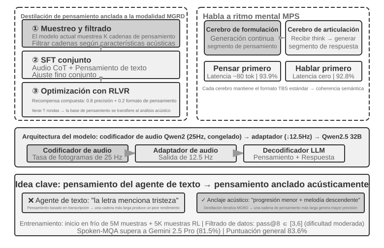
Experimento 9-4 ★★★: Uso de Step-Audio R1 para razonamiento hablado de extremo a extremo
Este experimento utiliza el modelo Step-Audio R1 para comparar el rendimiento de diferentes configuraciones en tareas de pensamiento y diálogo por voz. Step-Audio R1 consta de un codificador de audio, un adaptador de audio y un decodificador Qwen2.5 32B, requiriendo el despliegue en GPU de múltiples tarjetas.
Este experimento evalúa dos tareas: Spoken-MQA (problemas matemáticos hablados), que examina si el modelo puede realizar razonamiento matemático multipaso tras escuchar preguntas dictadas; y URO-Bench (benchmark de diálogo hablado en chino), que evalúa la calidad del diálogo abierto.
Las configuraciones de prueba se dividen en dos dimensiones. La primera es el momento del pensamiento: el TBS completo (Think-Before-Speak, pensar antes de hablar, como línea base de control sin restricción de latencia) genera todo el pensamiento antes de hablar; para reducir la latencia, MPS proporciona dos variantes de "pensar mientras se habla": Speak-First (también llamado spkfirst, latencia cero, iniciando el habla y el pensamiento simultáneamente) y Think-First (también llamado thkfirst, esperando a que el cerebro de pensamiento produzca la primera sección antes de hablar, con una latencia de unos 80 tokens). La segunda es la arquitectura: MPS de doble cerebro en paralelo frente a TBS tradicional de un solo modelo.
Los resultados se muestran en la Tabla 9-1, utilizada para comparar el rendimiento de diferentes momentos de pensamiento y configuraciones de arquitectura en la precisión matemática y las puntuaciones de diálogo.
Tabla 9-1 Comparación de configuraciones de razonamiento hablado de Step-Audio R1
Configuración Spoken-MQA URO-Bench Responder directamente sin pensar (Línea base) 70.6% 77.4 MPS Speak-First (Latencia cero) 92.8% 82.5 MPS Think-First (~80 tok de latencia) 93.9% 84.8 TBS Completo (Sin restricción de latencia) 93.0% N/A Un hallazgo interesante es que Speak-First tiene un impacto mínimo en las tareas de pensamiento (92.8% cercano al 93.0% del TBS completo). La razón radica en que el comienzo del CoT (Chain-of-Thought) suele limitarse a reformular el contenido de la pregunta antes de entrar en el razonamiento real, por lo que incluso si el modelo empieza a hablar al tiempo que inicia el pensamiento, la precisión final no sufre casi ninguna pérdida. Otro detalle digno de atención es que Think-First (93.9%) es incluso ligeramente superior al TBS completo sin restricción de latencia (93.0%): una explicación posible es que producir el pensamiento por partes y convertirlo gradualmente en expresión actúa como un beneficio de supervisión paso a paso; por supuesto, la diferencia entre ambos está dentro del margen de error de la evaluación y no debe sobreinterpretarse.
La Solución 3 "internaliza" el pensamiento en un solo modelo, logrando la forma más elegante de "pensar mientras se habla", pero el costo es precisamente el "blanco en movimiento" mencionado al principio de esta sección: este único modelo debe ser tanto el razonador más fuerte como el hablante en tiempo real, y dado que ambas capacidades evolucionan rápidamente, la ruta unificada requiere reentrenamientos repetidos para mantenerse al día. Esto explica también la diferenciación industrial al momento de escribir este libro: los productos de vanguardia que buscan "poder cambiar en cualquier momento al último cerebro" (GPT-Live, Grok Voice, Pine AI) apuestan en su mayoría por la ruta de desacoplamiento de la Solución 2, mientras que la Solución 3 es más adecuada para escenarios que persiguen una naturalidad extrema y están dispuestos a asumir costos de entrenamiento dedicados. Ninguna reemplaza a la otra, sino que representan un compromiso entre un "cerebro intercambiable" y un "pensar mientras se habla más estrecho".
Interfaz entre rápido y lento: ¿Qué más se puede transmitir además de texto?¶
(Nota: Esta es una discusión de interfaz aplicable a múltiples escenarios, alejándose temporalmente de la línea principal de voz.) Al revisar la Solución 2, se descubre una dimensión de diseño pasada por alto: el pensamiento lento le "pasa la nota" al pensamiento rápido mediante un canal de texto (transmitiendo una sugerencia a través del Status Bar). El texto es fácil de entender y depurar, pero es una pajilla delgada para todo lo que hay en la cabeza del pensamiento lento: los ricos estados intermedios reales se comprimen en unas pocas frases. Entonces, ¿esta interfaz entre lo rápido y lo lento podría prescindir del texto?
En escenarios de juegos en tiempo real con las exigencias de ritmo más estrictas, esta vía es viable (pudiendo llamarse puente de espacio latente, Latent Bridge) 5: se congelan tanto un modelo pequeño encargado de la reacción rápida (que emite decenas de acciones por segundo) como un modelo lento encargado del razonamiento (que emite un pensamiento por segundo), y solo se entrena entre ellos un pequeño "puente" de decenas de millones de parámetros que proyecta directamente las conclusiones de las capas ocultas del modelo lento en unos pocos "tokens latentes", concatenándolos en la entrada del modelo rápido como se hace con los tokens visuales en los modelos multimodales (evitando el viaje de ida y vuelta de "idea → texto → recomprensión"). Como resultado, en múltiples juegos de Atari, este canal de espacio latente superó al canal de texto tradicional por un margen significativo (+26% a +82% en algunos juegos), añadiendo solo unos 5 milisegundos por paso y manteniéndose a la par del ritmo en tiempo real.
También proporciona una frontera honesta: si la colaboración rápido-lento es útil o no depende de si el cuello de botella de la tarea radica en 'pensar en la solución' o en 'tener tiempo de reaccionar': solo cuando el pensamiento lento es intrínsecamente más fuerte que la reacción rápida resulta útil este puente (esta correlación alcanza r ≈ 0.9 en diversos juegos); por el contrario, si la tarea depende puramente de la velocidad de reacción, el mejor puente no servirá de nada. Este juicio no solo es válido para los juegos, sino que anticipa el mismo problema que encontrará más adelante la sección de Computer Use en este capítulo: cuándo vale la pena consultar a un "asesor lento" y cuándo eso solo añade latencia inútilmente.
Ya sea de extremo a extremo o modular, la calidad individual de la capa de percepción y la capa de ejecución sigue siendo de vital importancia. El modelo de extremo a extremo resuelve el problema de la latencia a nivel de arquitectura, pero el "escuchar con precisión" y el "hablar con naturalidad", como habilidades básicas, no se resuelven automáticamente por el cambio de arquitectura (el "escuchar con precisión" correspondiente a la percepción de voz en streaming ya se discutió en el Paradigma 1; aquí examinaremos el "hablar con naturalidad" de la capa de ejecución: la síntesis de voz más humana).
Síntesis de voz más humana¶
La "perfección" del TTS tradicional es precisamente donde radica el problema: una voz demasiado fluida, sin pausas y sin muletillas hace que el oyente identifique al instante que se trata de una máquina. Las "imperfecciones" del habla humana no son defectos: las pausas, las muletillas ("eh", "este", "bueno") y las repeticiones ocasionales son en realidad la exteriorización natural del proceso de pensamiento, transmitiendo señales importantes al oyente como "estoy pensando" o "no estoy muy seguro". Sin embargo, la velocidad de pensamiento de la IA es mucho más rápida que la reproducción de voz, siendo su salida naturalmente fluida y completa, lo que revela su identidad de máquina si se sintetiza directamente.
Solución: Entregar la toma de decisiones sobre "dónde pausar y qué tono usar" al LLM principal. El LLM emite no solo texto, sino también marcadores de control: [THINKING] indica insertar 1-2 segundos de pausa de pensamiento y sonidos de relleno ("eh..."); [SEARCHING] genera pausas más cortas y muletillas de búsqueda ("este...", "¿cómo decirlo?"); [EMO:happy] ajusta el tono y la prosodia; [SPEED:0.8x] controla la velocidad del habla. Solo el LLM sabe si en el momento actual se está respondiendo a una pregunta compleja que requiere una pausa, si el usuario se ha impacientado y se debe acelerar, o si es una charla relajada que debe ser más animada.
El TTS juega aquí el rol de un generador multimodal: recibe texto + marcadores de control y emite audio. Ante texto ordinario sintetiza voz con normalidad, y ante marcadores de control genera el audio no verbal correspondiente: [THINKING] genera un "eh..." prolongado, [SIGH] genera un suspiro, [LAUGH:small] genera una risita, y [BREATH] genera una aspiración de aire.
Existen dos vías de implementación: la primera es desarrollar un TTS propio que admita nativamente marcadores de control (máxima flexibilidad, pero requiere un equipo especializado); la segunda es aprovechar la clonación de voz (voice cloning) para preparar decenas de voces de referencia con diferentes emociones, velocidades y estilos para una misma persona virtual, seleccionando la voz de referencia más adecuada según los marcadores de control para llamar a la API de TTS (como ElevenLabs o Fish Audio), completando el despliegue en unas pocas semanas.
Experimento 9-5 ★★: TTS impulsado por marcadores de control basado en Fish Audio
Se utiliza la capacidad de clonación de voz de Fish Audio S1 (que permite clonar el mismo timbre sin muestras previas con solo 3-10 segundos de audio de referencia). Se construye una biblioteca de 24 voces de referencia que cubren emociones (neutral / alegre / frustrado / pensando) × velocidad de habla (normal / rápida / lenta) × estilo (formal / relajado), de unos 5 segundos cada una.
Ejemplo de salida del LLM:
[EMO:happy][SPEED:fast]¡Excelente! Su pedido ha sido confirmado. [THINKING]Eh, déjeme verificar la fecha de envío... [EMO:neutral][SPEED:normal]Se prevé que llegue mañana por la tarde.La capa de ejecución analiza los marcadores y los mapea a las voces de referencia correspondientes:
[EMO:happy][SPEED:fast]se corresponde con la voz de referencia "alegre + rápida + relajada",[THINKING]se corresponde con la voz de referencia "pensando + lenta + formal" (con ritmo de pausa y tono de duda), y[EMO:neutral][SPEED:normal]se corresponde con la voz de referencia "neutral + normal + formal". Fish Audio garantiza la consistencia del timbre entre diferentes voces de referencia, cambiando únicamente la prosodia y la emoción.Se comparan tres configuraciones: sin marcadores de control (fluido pero mecánico, se nota al instante que es IA), voz de referencia única (natural pero monótona en emociones) y biblioteca de múltiples voces de referencia (alegre y rápida al confirmar información, con pausas naturales antes de dar explicaciones, aproximándose en general al modo de expresión de un agente de atención al cliente humano).
Computer Use: Agentes de automatización de GUI¶
Al llegar a este punto, el lector habrá notado que el espacio dedicado a la voz en este capítulo es notablemente superior al de los dos escenarios posteriores, lo cual es intencionado. En la línea evolutiva de la multimodalidad en tiempo real, la voz es el escenario que se ha desarrollado de manera más completa y que más merece tomarse como sistema de referencia: partiendo del problema de "la alta latencia del pipeline serial", pasando por soluciones como extremo a extremo, full-duplex y pensar mientras se habla, hasta llegar a la situación consolidada de hoy, todo el recorrido de problema → solución → situación final se ha completado. Por ello lo explicamos en profundidad, de modo que los dos escenarios siguientes, Computer Use y robótica, puedan examinarse en comparación con este marco de referencia: para ver en qué punto de esta línea evolutiva se encuentra cada uno y dónde se han atascado.
Aunque estos tres escenarios parecen diferentes, enfrentan los mismos desafíos centrales: percepción en tiempo real, toma de decisiones con baja latencia e interacción continua. A continuación veremos cómo reaparecen estos temas técnicos en la interacción visual (Computer Use) y la interacción física (robótica); comenzando por ampliar la perspectiva de la modalidad auditiva a la visual: ¿qué ocurre si el Agente no solo puede comprender la voz, sino también "entender" la pantalla y operar interfaces gráficas de usuario?
Computer Use (también llamado Agente de automatización de GUI) permite a la IA utilizar software como los humanos, observando la pantalla y operando el ratón y el teclado; por ejemplo, abrir el navegador para buscar información, rellenar datos en una hoja de cálculo o ajustar la configuración del sistema. Su núcleo es un bucle de Percepción-Pensamiento-Acción (Figura 9-7):
- El Agente toma una captura de la pantalla actual.
- El modelo multimodal recibe la captura y la instrucción de la tarea, emitiendo un fragmento de pensamiento y una acción específica.
- La capa de ejecución ejecuta dicha acción en el entorno real (mover el ratón, hacer clic, ingresar texto, etc.).
- Espera la respuesta de la interfaz y vuelve a tomar una captura de pantalla, entrando en la siguiente ronda del bucle.
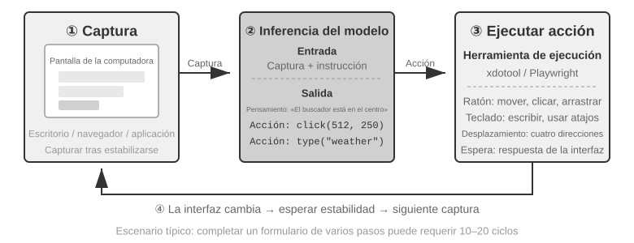
Existen tres dimensiones de diseño clave en este bucle: el espacio de acciones (qué operaciones puede ejecutar el Agente), el grounding visual (cómo encontrar el elemento objetivo en la captura de pantalla) y la arquitectura del modelo (cómo generar la acción correcta a partir de la captura de pantalla).
Diseño del espacio de acciones¶
Anthropic define tres categorías de herramientas que constituyen la capacidad de interacción completa (Figura 9-8):
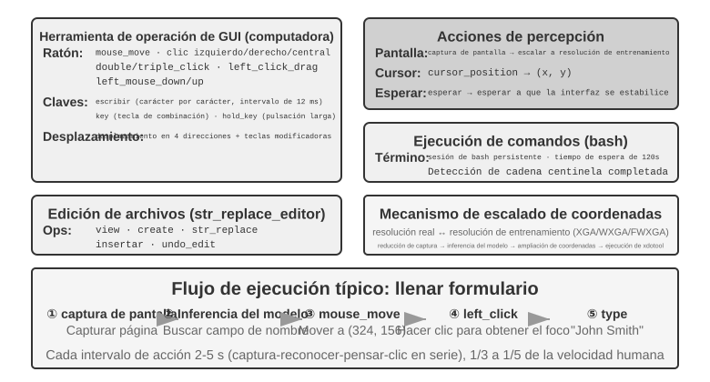
Herramientas de operación de GUI (computer tool): Las operaciones de ratón incluyen movimiento (mouse_move), clic con botón izquierdo/derecho/central, doble clic/triple clic, arrastre (left_click_drag), así como presionar/soltar con mayor precisión (left_mouse_down/up). El desplazamiento (scroll) admite cuatro direcciones y se puede combinar con teclas modificadoras. Las operaciones de teclado incluyen escritura carácter por carácter (type, simulando la escritura real con un intervalo de 12 ms entre caracteres), combinaciones de teclas (key, como Ctrl+C) y pulsación prolongada (hold_key). Acciones de percepción: captura de pantalla (screenshot), obtención de la posición del cursor (cursor_position) y espera (wait).
Herramientas de ejecución de comandos (bash tool): Proporciona una sesión de terminal bash persistente con un tiempo de espera de 120 segundos, detectando si la ejecución del comando ha finalizado mediante cadenas centinela y manteniendo el estado del entorno entre múltiples llamadas (por ejemplo, si se hace cd a un directorio, la siguiente llamada permanecerá en ese directorio).
Herramientas de edición de archivos (str_replace_editor): Logra una edición segura mediante coincidencia de cadenas, admitiendo operaciones de visualización, creación, reemplazo, inserción y deshacer, siendo más preciso que sobrescribir el archivo completo y reduciendo la probabilidad de modificar involuntariamente otros contenidos.
Experimento 9-6 ★: Ejecutar la demo de Anthropic Computer Use
El contenedor empaqueta un entorno de escritorio Ubuntu completo (que incluye navegador, terminal y otras herramientas comunes). El cliente recibe las instrucciones de la tarea, el servidor envía las instrucciones y las capturas de pantalla a Claude, el modelo devuelve las instrucciones de operación (mover el ratón, hacer clic, ingresar texto, etc.) y la capa de ejecución las ejecuta en el escritorio virtual.
Observación clave: El intervalo entre cada acción es de 2 a 5 segundos (notablemente más lento que los humanos), pero demuestra una buena capacidad de planificación para tareas comunes, siendo capaz de descomponerlas autónomamente en secuencias de operaciones razonables.
Grounding visual (Visual Grounding)¶
En cada ronda del bucle, el modelo necesita localizar con precisión el elemento objetivo en la captura de pantalla: "¿Dónde está la casilla de búsqueda?", "¿Cuáles son las coordenadas del botón de envío?". Este es el problema de grounding visual (Visual Grounding). Actualmente existen dos enfoques principales: el primero convierte la localización en una pregunta de opción múltiple (etiquetando previamente los elementos de la interfaz con números para que el modelo solo tenga que elegir uno); el segundo es la predicción directa de coordenadas (permitiendo que el modelo "mire" directamente la captura de pantalla e informe las coordenadas como haría un humano). El enfoque de opción múltiple tiene dos formas de implementación: anotación puramente visual (el Set-of-Mark original, utilizando modelos de segmentación para recortar regiones candidatas sobre los píxeles) e indexación de elementos estructurados (DOM/Accessibility Tree, leyendo directamente la estructura interna de la interfaz). La ventaja común del enfoque de opción múltiple es que transforma la tarea abierta de "encontrar el botón en la captura de pantalla y predecir las coordenadas" en una tarea cerrada de "elegir uno entre los elementos ya etiquetados" (al igual que en un examen las preguntas de opción múltiple son más fáciles de responder correctamente que las de rellenar espacios), donde el modelo solo necesita decir "hacer clic en [123]" en lugar de "hacer clic en el botón azul situado aproximadamente a 200 píxeles a la derecha de la esquina superior izquierda de la pantalla".
Set-of-Mark: Método de anotación visual.
El Set-of-Mark (SoM) original fue propuesto por Microsoft Research en 2023, inicialmente para liberar la capacidad de localización visual de GPT-4V. Es un método puramente visual: utiliza modelos de segmentación de imágenes (SAM, SEEM, etc.) para recortar automáticamente regiones candidatas en la captura de pantalla, superponiendo marcas numéricas en cada región; el modelo ve una imagen con números y solo necesita informar el número, que el sistema convierte en las coordenadas centrales de la región correspondiente. Todo el proceso no requiere DOM ni ninguna estructura interna de la interfaz, por lo que el software de escritorio nativo y las interfaces de juegos son igualmente aplicables, siempre que el modelo de segmentación pueda recortar las regiones candidatas.
Indexación de elementos estructurados: Implementación estructurada de la idea SoM en la Web.
Cuando la propia interfaz puede proporcionar información estructurada, las anotaciones se pueden realizar con mayor precisión. Las páginas web modernas ya definen la estructura completa de los elementos (árbol DOM) y los roles semánticos (cuál es un botón, cuál es una casilla de entrada) antes de renderizar, y las interfaces de accesibilidad (Accessibility Tree) proporcionan información similar para muchas aplicaciones de escritorio. En lugar de dejar que el modelo de segmentación adivine entre los píxeles "qué región es un botón", es mejor preguntar directamente a la propia interfaz "¿qué elementos interactivos tienes?". Las soluciones de Web Agent representadas por el proyecto browser-use funcionan precisamente de esta manera: enumeran y numeran los elementos interactivos desde el DOM, lo que puede considerarse una implementación estructurada de la idea SoM en la Web (Figura 9-9). El flujo consta de cuatro pasos:
- Obtener la representación estructurada de la página web (árbol DOM) y la información de accesibilidad a través de la interfaz de depuración del navegador (CDP, Chrome DevTools Protocol).
- Detectar automáticamente qué elementos son interactivos (botones, casillas de entrada, enlaces, etc.).
- Etiquetar un ID único para cada elemento interactivo y dibujar cuadros delimitadores en la captura de pantalla.
- Generar simultáneamente una lista de texto que describa el elemento correspondiente a cada ID.
Screenshot: [en la imagen los elementos clave están etiquetados con ID como [1], [2], [3], [4]]
Elements:
[1] <input type="text" placeholder="Search" aria-label="Search" />
[2] <button id="submit-btn" aria-label="Submit form" />
[3] <input type="text" placeholder="Enter your name" value="" />
[4] <a href="/docs" aria-label="Documentation" />
El modelo solo necesita emitir un número de ID, y el sistema ejecuta automáticamente el clic utilizando las coordenadas centrales de dicho elemento. Este tipo de solución no ahorra tokens (porque toda la información de anotación debe enviarse al modelo), pero la localización es precisa y estable, evitando además las omisiones y falsas detecciones que los modelos de segmentación podrían introducir.
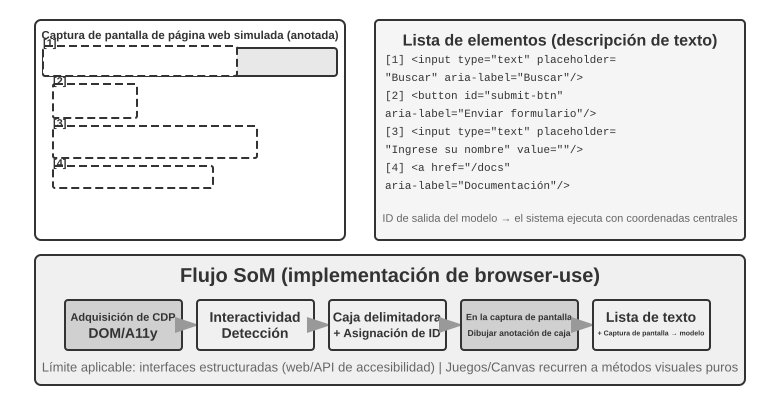
Predicción directa de coordenadas.
La tercera ruta no realiza ninguna anotación y permite que el modelo emita las coordenadas directamente. Representada por SeeClick y el computer use de Claude: se entrena un modelo visual con datos emparejados de capturas de pantalla de GUI y posiciones de elementos a gran escala, permitiéndole aprender a mapear descripciones en lenguaje natural (como "hacer clic en el botón de envío") directamente a coordenadas precisas en la captura de pantalla, al igual que un usuario humano que confía puramente en la "vista" para encontrar la posición donde hacer clic.
En la solución de predicción de coordenadas, la comprensión de las coordenadas por parte del modelo depende en gran medida de la resolución utilizada durante el entrenamiento (Figura 9-10). El entrenamiento de Claude utiliza XGA (1024x768), WXGA (1280x800) y FWXGA (1366x768); si la resolución de la captura de pantalla de entrada no coincide, las coordenadas predichas por el modelo se desviarán sistemáticamente, como si se midiera una distancia en un mapa pequeño y se aplicara directamente a un mapa grande. Por lo tanto, es necesario implementar un mecanismo de escalado bidireccional de coordenadas en la capa de herramientas, debiendo seleccionar la resolución objetivo según la relación de aspecto de ancho y alto, evitando que un estiramiento no proporcional deforme la imagen e introduzca desvíos en el juicio de coordenadas. Por ejemplo, si la resolución real de la pantalla es de 2560×1440 (16:9), se debe seleccionar entre las tres opciones admitidas por Claude aquella cuya relación de aspecto sea más cercana a 16:9: FWXGA (1366×768) es la más adecuada. Al tomar la captura de pantalla, la pantalla se escala proporcionalmente a 1366×768 para enviarla al modelo; tras emitir el modelo las coordenadas de clic (683, 384), se mapean de forma inversa a las coordenadas reales (683×2560/1366, 384×1440/768) ≈ (1280, 720). Por el contrario, si se fuerza el estiramiento de 16:9 a 1024×768 (4:3), la imagen se aplastará horizontalmente y las coordenadas predichas por el modelo sufrirán una desviación sistemática.
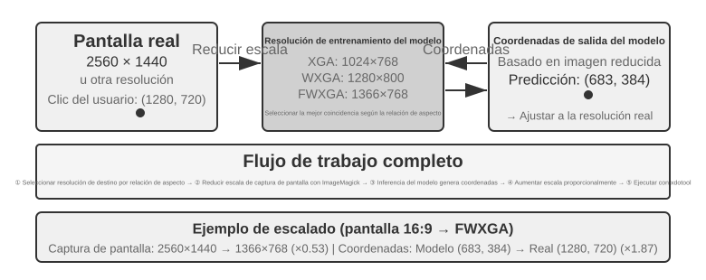
La lógica de elección entre las tres rutas se puede resumir de la siguiente manera: cuando la información estructurada esté disponible, se priorizará el uso del índice DOM/Accessibility Tree, ya que la localización es la más precisa y estable; cuando no esté disponible (software de escritorio nativo como Photoshop, interfaces renderizadas en Canvas/WebGL, juegos), se puede utilizar tanto la anotación visual (ruta SoM original) como la predicción de coordenadas. La anotación visual convierte la localización en una pregunta de opción múltiple, siendo más amigable para modelos generales no entrenados específicamente; la predicción de coordenadas omite el paso de anotación y es más directa para modelos entrenados en localización de GUI. La precisión de ambas en elementos pequeños e interfaces densas aún presenta brechas.
Experimento 9-7 ★: Uso de browser-use para implementar operaciones automatizadas en el navegador
Basado en el framework de automatización de navegadores Playwright (una biblioteca de código para controlar navegadores), combinado con grandes modelos multimodales para lograr operaciones en el navegador impulsadas por lenguaje natural. Se habilita el modo de visualización SoM, guardando una captura de pantalla con cuadros delimitadores etiquetados antes de cada toma de decisión.
Tarea de prueba "Abrir Google y consultar el clima en San Francisco": Tras iniciar el sistema, la captura de pantalla muestra la página de búsqueda de Google, con todos los elementos interactivos etiquetados con cuadros delimitadores rojos y números de ID (barra de direcciones
[1], casilla de búsqueda[2], botón de búsqueda[3], botón "Voy a tener suerte"[4], etc.) → El modelo analiza y hace clic en[2](casilla de búsqueda) → Tras obtener el foco la casilla de búsqueda, ingresa "San Francisco weather today" → Hace clic en[3](botón de búsqueda) → La página salta a los resultados de búsqueda, la nueva captura de pantalla etiqueta los elementos dentro de la tarjeta del clima, y el modelo identifica y extrae la temperatura, las condiciones meteorológicas y otra información. Todo el proceso consta de 5 pasos de operación y se completa en unos 20 segundos.
Agentes de Computer Use capaces de ver animaciones y escuchar audio¶
Hasta ahora, la percepción de Computer Use se ha basado en una suposición implícita: la pantalla está estática (tomar una captura, pensar un paso, hacer clic, y luego tomar la siguiente captura). Sin embargo, en la realidad las pantallas reproducen videos, muestran notificaciones fugaces y reproducen las voces de las personas en las reuniones. Un Agente que solo abre los ojos una vez cada 3-5 segundos y carece por completo de oídos es incapaz de ver o escuchar "lo que sucede entre dos fotogramas". Ver grabaciones de pantalla, seguir reuniones, escuchar avisos de voz o responder a cuadros de diálogo que parpadean rápidamente: toda esta categoría de operaciones cotidianas en computadoras es casi una zona prohibida para los Agentes de Computer Use de hoy en día.
Lo que realmente debe rediseñarse aquí no es la "interfaz de acción", sino la "interfaz de observación" 6. La idea central es desacoplar la observación (continua, adaptativa, multimodal) de la acción (discreta), convirtiéndola en una capa de middleware de percepción que se inserta entre el entorno y cualquier modelo de Computer Use existente sin necesidad de reentrenamiento (pudiendo denominarse Interfaz de Observación Agente-Computadora, AOI). Consta de tres componentes que "abren la compuerta según la demanda": en primer lugar, la captura de fotogramas clave entre fotogramas (utilizando primero una puerta de píxeles extremadamente económica para omitir imágenes casi sin cambios, y luego un modelo pequeño para juzgar si la imagen ha sufrido cambios significativos, tomando capturas solo ante cambios, con costo casi nulo en imágenes estáticas); en segundo lugar, la transcripción de voz controlada por puerta de volumen (llamando al reconocimiento de voz solo cuando hay sonido, permitiendo al Agente "desarrollar oídos" por primera vez); y en tercer lugar, lo más crítico, narrar la imagen en texto persistente (haciendo que el modelo describa los fotogramas capturados en una frase como "la notificación recién mostrada dice que la fecha de lanzamiento cambió al 28 de abril", y aunque la imagen original se limpie posteriormente del contexto, esta frase de texto permanece en la memoria, llevando la información dinámica hacia adelante en forma de texto).
Un hallazgo contraintuitivo es que lo que realmente funciona no es "qué fotogramas seleccionar", sino "narrar los fotogramas como texto que se pueda conservar a largo plazo": el texto es precisamente la modalidad que mejor manejan los LLM Agent. En ocho modelos que van desde 7B hasta la escala de vanguardia, este middleware aportó una mejora de +17 a +48 puntos porcentuales sin necesidad de reentrenamiento alguno, siendo la brecha en las tareas de voz la más drástica: con esta capa de percepción añadida, el Agente pudo realizar tareas de voz que originalmente "escuchaba pero no podía ejecutar". Sin embargo, tampoco se trata de una configuración fija universal: en algunos modelos más recientes, añadir demasiados tokens de imagen desplaza al razonamiento y perjudica el rendimiento, por lo que estos componentes deben seleccionarse modelo por modelo, en lugar de activarlos todos de golpe. Esto sigue la misma lógica que la elección entre Set-of-Mark y predicción de coordenadas explicada anteriormente: no existe una bala de plata en las soluciones de percepción, y es necesario configurarlas según las características específicas del modelo.
Dispositivos móviles: Las barreras del ecosistema superan a los desafíos técnicos¶
Computer Use también se está expandiendo hacia los dispositivos móviles. Existen diferencias técnicas reales entre los dispositivos móviles y los de escritorio: el espacio de acciones ya no suele ser "coordenadas del ratón + teclado", sino que se conecta a las API de servicios de accesibilidad del sistema (como AccessibilityService en Android) para leer los elementos de la interfaz y emitir clics e ingreso de texto; el modo de interacción pasa de un puntero de ratón a gestos táctiles, y la semántica de las coordenadas cambia en consecuencia (si un mismo \((x, y)\) corresponde a un toque simple, una pulsación larga o el punto inicial de un gesto de deslizamiento requiere tipos de gestos adicionales para delimitarse). Los benchmarks para móviles como AndroidWorld presentados en el Capítulo 6 evalúan precisamente la capacidad del Agente para completar tareas reales en App sobre este espacio de acciones.
Sin embargo, lo que suele atascar a los dispositivos móviles no son estas diferencias técnicas, sino las barreras del ecosistema. Algunos fabricantes de teléfonos móviles intentaron integrar asistentes de IA en teléfonos de consumo para operar automáticamente aplicaciones cotidianas como WeChat, Taobao y Alipay, pero rápidamente encontraron restricciones por parte de las plataformas.
Esto revela un desafío único al que se enfrenta Computer Use: las barreras del ecosistema. La razón fundamental detrás de los bloqueos es el conflicto de modelos de negocio. La lógica de monetización central de las aplicaciones de internet tradicionales es el tráfico y la atención: los usuarios ven anuncios al revisar flujos de información, siguen la guía de los algoritmos de recomendación al buscar productos y generan compras impulsivas al navegar por las páginas. Sin embargo, cuando el Agente opera en lugar del usuario, esta cadena de monetización se elude por completo: la IA no presta atención a los anuncios ni realiza compras impulsivas, dirigiéndose directamente al objetivo para completar la tarea e irse. Para las plataformas que monetizan mediante anuncios y tráfico, cada operación del Agente erosiona la base de su modelo de negocio.
Esto significa que Computer Use no solo se enfrenta a enfrentamientos a nivel técnico como los CAPTCHA (códigos de verificación), sino a un conflicto de intereses estructural. Esta contradicción es difícil de conciliar a corto plazo, lo que hace que la implantación de Computer Use en escenarios de consumo enfrente desafíos más complejos que los puramente técnicos.
Tiempo real: El desafío central aún sin resolver¶
OSWorld (cuya metodología de evaluación se detalló en el Capítulo 6) es un benchmark de evaluación de Computer Use ampliamente utilizado que prueba la capacidad del Agente para completar tareas entre aplicaciones en entornos reales de Ubuntu/Windows/macOS. La tasa de éxito de los primeros modelos generales en este benchmark era de solo un 20% aproximadamente; los modelos dedicados posteriores y los modelos generales más potentes han continuado elevando la precisión, acercándose gradualmente al nivel humano al momento de escribir este libro. Sin embargo, la precisión dista mucho de ser el final: el verdadero cuello de botella ha pasado de "¿puede hacerlo bien?" a "¿puede hacerlo rápido?".
El estudio de eficiencia de OSWorld-Human reveló una realidad cruda: incluso si la tarea tiene éxito al final, los pasos de operación necesarios para que el Agente complete la misma tarea siguen siendo notablemente superiores a los de los humanos, y la latencia de inferencia de cada paso continúa creciendo a medida que avanza la tarea (cuanto más largo es el contexto, más lenta es la decisión del modelo, siendo el tiempo consumido en los pasos finales a menudo muy superior al de las etapas iniciales). Un ajuste de formato de documento que un humano completaría en decenas de segundos puede llevarle al Agente varios minutos de titubeo. Que la precisión alcance el nivel humano no equivale a practicidad: la eficiencia es el verdadero cuello de botella.
La causa raíz del problema de eficiencia es similar a la del escenario de voz: en el bucle serial de "captura-pensamiento-clic", incluso si cada etapa se optimiza al límite, la latencia acumulada paso a paso sigue siendo inaceptable. Un problema más profundo es que el Computer Use actual carece por completo de la capacidad de "pensar por adelantado". Si el Agente pudiera predecir el siguiente paso que debe realizar mientras ejecuta la acción actual (por ejemplo, pensar dónde hacer clic a continuación mientras espera que se cargue la página), se podrían superponer los tiempos de pensamiento y ejecución, reduciendo drásticamente la latencia total (esta es la misma exigencia que el "pensar mientras se habla" en el escenario de voz anterior y el Agente asíncrono de "pensamiento continuo" del Capítulo 4, solo que aquí se convierte en "pensar mientras se opera").
A diferencia del campo de la voz, la naturaleza de tiempo real propia de Computer Use (acelerar el propio bucle de "captura-pensamiento-clic") no cuenta actualmente con una solución sistemática, manteniéndose en el bucle discreto de capturas fotograma a fotograma. Sin embargo, una vía para eludirlo ya se ha completado, utilizando precisamente el desacoplamiento rápido-lento que reaparece a lo largo de este capítulo: dado que acelerar al lento Agente de operación de computadora es difícil, no se debe hacer esperar al usuario por él. Se dividen la "charla" y la "operación de la computadora" en dos modelos concurrentes, rápido y lento 7: un modelo pequeño (rápido) se encarga del diálogo por voz en tiempo real, mientras que un VLM de vanguardia (lento) opera paso a paso en el navegador, comunicándose ambos a través de un "contrato de texto puro" muy simple: cada vez que el Agente lento realiza una operación, adjunta un resumen de estado actualizado en desplazamiento ("Rellenando el formulario, aún se necesita su fecha de nacimiento"), el Agente rápido responde en tiempo real al usuario basándose en esto y le transmite la nueva información dada verbalmente por el usuario al Agente lento, y hasta que el resumen de estado confirme la finalización, el Agente rápido no tiene permitido decir 'está listo'. Este es precisamente el escenario de "hablar por teléfono mientras se deja que la computadora opere sola". En los experimentos, este desacoplamiento hizo que la respuesta de voz fuera aproximadamente 15 veces más rápida que en el caso de "un solo modelo hablando mientras opera" (latencia mediana de 0.58 s vs 8.64 s), sin reducir la tasa de éxito de la tarea; en cuanto se retiró ese canal de texto entre rápido y lento, la tasa de éxito colapsó instantáneamente a 0, ya que la información clave dada verbalmente por el usuario no podía transmitirse al navegador. Esta es la misma idea que el Latent Bridge anterior y el "pensar mientras se habla" en el escenario de voz: cuando un componente es lento por naturaleza, se permite que otro componente rápido llene la espera del usuario (solo que ese "contrato de texto puro" es en esencia el Agent Status Bar del que se ha hablado desde el Capítulo 2). La aceleración del propio bucle de Computer Use seguirá siendo quizás una dirección de investigación importante a futuro, pero "ocultar lo 'lento' mediante el desacoplamiento rápido-lento" se ha convertido en una respuesta utilizable.
Operación robótica: Del control en tiempo real al entrenamiento y la generalización¶
Nota de lectura: Esta sección aborda el control robótico. El Experimento 9-10 muestra los métodos de transferencia de la simulación a la realidad: la parte de entrenamiento en simulación (pasos 3 y 4) se puede completar en un servidor con GPU pura, sin necesidad de hardware; pero para reproducir de extremo a extremo toda la línea de producción (incluidos los pasos de despliegue real), se requiere hardware real como el brazo robótico SO100. Si temporalmente no estás interesado en el campo de la robótica, puedes saltarte esta sección sin que afecte a la lectura de los demás capítulos.
Los Agentes de voz enfrentan la latencia en la modalidad auditiva, Computer Use enfrenta la latencia en la modalidad visual, y cuando el Agente necesita controlar robots en el mundo físico, los desafíos de latencia y multimodalidad se amplifican aún más: las consecuencias de las acciones son irreversibles, y una sola colisión puede dañar los objetos o al propio robot. Esta sección examina primero cómo los robots reducen el problema del control en tiempo real mediante arquitecturas de dos capas y Action Chunking, para pasar luego a su escollo más duro en la actualidad: el entrenamiento y la generalización (cómo se obtienen los datos y cómo migra el modelo entre tareas y plataformas).
El hardware no es el cuello de botella, los algoritmos sí lo son¶
Los robots aún no se han aplicado ampliamente en escenarios abiertos generales. ¿El cuello de botella está en el hardware o en los algoritmos? El proyecto XLeRobot ofrece una contraprueba contundente: un robot de dos brazos sobre ruedas con un costo inferior a 1,000 dólares puede completar con fluidez una gran cantidad de tareas domésticas cuando los humanos lo teleoperan a través de visores VR. Tareas domésticas más complejas que requieren manos diestras también pueden ser completadas con fluidez por los robots de Unitree bajo teleoperación humana. La latencia de la teleoperación es de aproximadamente 100-200 ms, cercana a las exigencias de respuesta de la interacción física. La resolución de los sensores, la precisión de los actuadores y la frecuencia de control (el número de veces por segundo que el robot actualiza las instrucciones de acción; cuanto menor es la frecuencia, menos fluido es el movimiento y más probable es que aparezcan vibraciones o desvíos de la trayectoria objetivo) en las plataformas de bajo costo actuales ya son suficientes para respaldar tareas prácticas.
Es necesario delimitar las fronteras de esta afirmación: lo que la contraprueba de la teleoperación demuestra realmente es que "el hardware actual de bajo costo sumado a la inteligencia humana es suficiente para completar este tipo de tareas de manipulación doméstica basadas principalmente en retroalimentación visual". Esto no significa que el hardware cumpla en todas las dimensiones: la falta de sensores táctiles y la confiabilidad y costo de las manos diestras siguen siendo deficiencias de hardware reconocidas hasta el día de hoy; una vez que la tarea depende en gran medida del control preciso de fuerzas y la retroalimentación táctil, el hardware puede ser un cuello de botella. Por lo tanto, lo que se indica a continuación sobre "el hardware no es el cuello de botella" se limita al alcance de las tareas discutidas en esta sección.
En lo que respecta a este tipo de tareas, la verdadera brecha se encuentra en la capa algorítmica, la cual se desarrolla en las dos subsecciones siguientes.
Experimento 9-8 ★: Experiencia de teleoperación con XLeRobot
XLeRobot admite múltiples métodos de teleoperación como teclado, mando de Xbox, Joycon de Switch y visores VR. Al manipular personalmente el robot para completar tareas de recogida, colocación y limpieza, se observa la latencia de respuesta, la precisión del movimiento y la calidad de finalización de la tarea, estableciendo una comprensión intuitiva de los límites de capacidad del hardware: tras experimentarlo en persona se descubre que el robot puede hacer de todo cuando lo controla un humano, lo que demuestra que el cuello de botella actual reside en los algoritmos y no en el hardware 8.
Arquitectura de dos capas: Separación de planificación y control¶
Para que un robot complete tareas domésticas complejas, debe tomar decisiones en dos escalas temporales diferentes. La primera capa es la planificación de largo alcance (long-horizon planning), más lenta: desglosa instrucciones de alto nivel como "limpiar la cocina" en secuencias de subobjetivos (limpiar el mostrador, cargar el lavavajillas, limpiar las superficies), requiriendo comprender la semántica del entorno, razonar sobre las dependencias de la tarea y planificar esquemas de acción multipaso (al igual que un humano piensa "qué hacer primero y qué hacer después" antes de ponerse a trabajar). La segunda capa es el control VLA (Vision-Language-Action, modelo de Visión-Lenguaje-Acción), más rápido: ejecuta cada operación específica ("caminar hacia el fregadero", "tomar el trapo", "limpiar la superficie"), emitiendo continuamente señales de control basadas en la imagen actual que ve y las instrucciones de lenguaje, para que los movimientos del robot sean fluidos y continuos.
Esta arquitectura de dos capas separa eficazmente la complejidad: la planificación de largo alcance se encarga de "qué hacer" y el control VLA se encarga de "cómo hacerlo". Esta arquitectura de dos capas de "toma de decisiones lenta de alto nivel + ejecución rápida de nivel inferior" es altamente similar en estructura al "pensamiento rápido/lento" en el escenario de voz anterior: ambas desacoplan el pensamiento complejo y la respuesta en tiempo real en diferentes módulos. Cabe recordar que la "planificación / control" aquí se corresponde con el desacoplamiento de la dimensión "pensamiento profundo lento / respuesta en tiempo real rápida" en el pensamiento rápido/lento, y no con el desacoplamiento de "pensamiento / expresión" de MPS Solución 3 (este último divide "pensar" y "hablar", mientras que el primero divide "planificación global" y "ejecución en tiempo real", cortando dimensiones diferentes).
Sin embargo, la naturaleza de tiempo real no desaparece mágicamente, sino que se desplaza hacia abajo a la capa de control VLA, amortiguándose mediante la fragmentación de acciones (Action Chunking, véase la sección posterior "Control VLA"): el modelo genera en una sola inferencia una secuencia corta de acciones futuras, y el hilo de control la reproduce a alta frecuencia, diluyendo la latencia de una sola inferencia a lo largo del tiempo de ejecución de todo el bloque de acciones. Sin embargo, aquí hay un compromiso ineludible: la fragmentación intercambia reactividad por suavidad. Cuanto más largo es el bloque, más se diluye la latencia de cada inferencia y más continuo es el movimiento, pero el modelo "no ve" nuevas imágenes durante ese tiempo, volviéndose más lento ante cambios repentinos (si se mueve un objeto o alguien extiende la mano para bloquear). Este compromiso entre tiempo real y suavidad es la parte que la arquitectura de dos capas no elimina, sino que simplemente desplaza.
Aquí también es necesario explicar un giro en la línea principal de este capítulo: en el escenario robótico, la contradicción en tiempo real ya se ha mitigar parcialmente mediante el desacoplamiento de dos capas y la fragmentación de acciones, desplazándose la contradicción principal actual hacia el entrenamiento y la generalización (cómo obtener suficientes datos de demostración y cómo hacer que el modelo generalice entre tareas y plataformas). Las subsecciones siguientes se desarrollan en torno a esta nueva contradicción, siendo también la extensión al mundo físico de los entornos de simulación del Capítulo 6 y del aprendizaje por refuerzo del Capítulo 7.
Y esta nueva contradicción recae principalmente sobre la capa de control VLA. Se puede considerar VLA como "VLM + salida de acciones": el VLM (Vision-Language Model, modelo de visión-lenguaje: un gran modelo que comprende imágenes y texto simultáneamente) se encarga de "entender" y "pensar con claridad", y el VLA además debe "manos a la obra" sobre esta base, residiendo el verdadero desafío precisamente en esta capa de "manos a la obra". Actualmente, la capa de control VLA se entrena principalmente mediante aprendizaje por imitación (clonación de comportamiento): aprendiendo directamente de un gran número de demostraciones humanas "qué hacer al ver qué" (OpenVLA, RT-2, π₀, etc. pertenecen a esta categoría); el aprendizaje por refuerzo ha sido un medio complementario sobre esto en los últimos años. Aunque los VLA entrenados con aprendizaje por refuerzo pueden funcionar muy bien en tareas individuales, a menudo carecen de capacidad de generalización: incluso si SimpleVLA-RL en el Capítulo 7 reportó resultados elevados en tareas individuales en LIBERO, se entrenó con RL por separado para cada tarea, en lugar de ser un modelo unificado que generalice con cero muestras a todas las tareas. Este patrón de "entrenar una vez por cada tarea" significa que cada vez que se encuentra una nueva tarea, se deben volver a recopilar datos y reentrenar.
Las dos secciones siguientes discuten en profundidad las soluciones técnicas específicas para la planificación de largo alcance y el control VLA.
Planificación de largo alcance: De VLM a modelos de pensamiento embrollado dedicados¶
Los VLM generales ya poseen una capacidad notable de pensamiento embrollado. Gemini Robotics-ER 1.5 de Google DeepMind se optimizó específicamente para el pensamiento embrollado (Embodied Reasoning, es decir, comprender la posición, movimiento y relaciones causales de los objetos en el mundo físico), alcanzando un promedio de 62.8% en 15 benchmarks académicos (Point-Bench, RefSpatial, RoboSpatial, BLINK, etc.), superando a GPT-4o (60.6%) y Gemini 2.5 Pro (59.3%). Sus ventajas centrales incluyen: comprensión espacial avanzada y localización de objetos, razonamiento temporal (predecir causalidades de acciones como "qué pasará si empujo este vaso") y orquestación de tareas (descomponer instrucciones de alto nivel en pequeños pasos), admitiendo de forma nativa mecanismos de pensamiento (thinking) y llamadas a herramientas 9.
Experimento 9-9 ★★: Uso de Gemini Robotics-ER 1.5 para impulsar la navegación autónoma de XLeRobot
A través de la biblioteca RoboCrew, se utiliza Gemini Robotics-ER 1.5 como modelo de planificación de largo alcance, superponiendo marcas de escala angular en la imagen de la cámara. El sistema solo proporciona tres herramientas simples: avanzar, girar a la izquierda y girar a la derecha. Dada la tarea "encontrar la cocina y caminar hasta allí", el modelo toma decisiones a una frecuencia de 0.5-1Hz: identificando características visuales como pasillos, puertas y muebles, ejecutando un giro a la izquierda si juzga que "la cocina puede estar a la izquierda", y continuando el avance si ve que "hay un refrigerador al frente". También se puede extender al modo de control por voz (usando una palabra de activación para desencadenar nuevas tareas). Este experimento revela los límites de capacidad del VLM en la capa de planificación de largo alcance: el razonamiento espacial y la descomposición de tareas se realizan razonablemente bien, pero aún hay margen de mejora en la robustez y la consistencia del razonamiento multipaso en entornos complejos 10.
Control VLA: De datos de demostración a la generalización entre distintos cuerpos¶
En la capa de ejecución de la arquitectura de dos capas, tres modelos representativos (RT-2, OpenVLA y π₀) se enfocan en el control VLA, es decir, emitir las acciones del robot en tiempo real basándose en las imágenes de las cámaras y las instrucciones de lenguaje (Figura 9-11). Pertenecen a dos rutas en cuanto a la representación de las acciones: tokens de acción discretos y generación de trayectorias continuas.
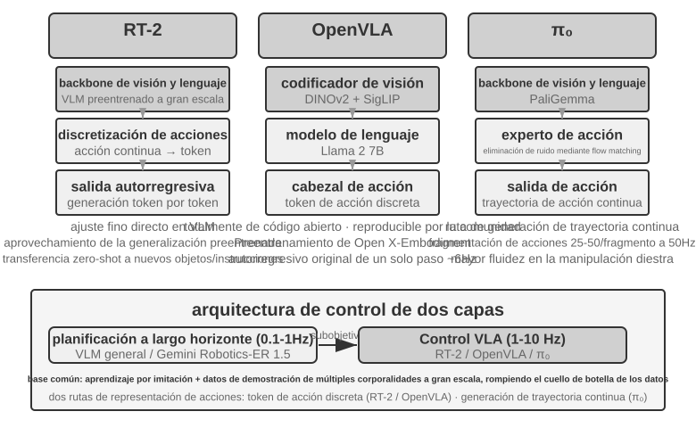
RT-2 y OpenVLA: Ruta de tokens de acción discretos.
RT-2 fue el pionero de esta ruta: realiza un ajuste fino directo sobre grandes modelos de visión-lenguaje, discretizando las acciones continuas del robot en tokens que se emiten de forma autorregresiva uno a uno como si fuera generación de texto, aprovechando la capacidad de generalización del modelo preentrenado para mejorar la transferencia zero-shot a nuevos objetos e instrucciones. OpenVLA sigue el esquema de representación de acciones de RT-2, unificando el modelo de lenguaje y el codificador visual en una sola arquitectura, recibiendo imágenes e instrucciones de texto para emitir tokens de acción. El entrenamiento consta de dos etapas: primero se realiza un preentrenamiento en el dataset multiplataforma a gran escala Open X-Embodiment (que abarca demostraciones de manipulación real en más de 20 plataformas robóticas) para aprender conocimientos generales de manipulación (los patrones de acción como "agarrar" y "colocar" son comunes entre diferentes robots), y luego se realiza un ajuste fino con pocos datos para plataformas específicas. Puesto que la representación de acciones es idéntica en esencia, la verdadera diferencia entre ambos reside en la apertura y las elecciones de ingeniería: RT-2 y sus datos de entrenamiento son internos de Google, mientras que OpenVLA es completamente de código abierto (modelo backbone de código abierto Llama 2 más codificador visual combinado con datasets públicos), lo que permite a toda la comunidad reproducir y mejorar sobre su base por primera vez.
Action Chunking: Tecnología de compensación de frecuencia universal en el campo VLA.
Debido a la latencia de inferencia de los LLM, la frecuencia de control de VLA es muy inferior a las exigencias del control robótico tradicional (el control robótico tradicional exige frecuencias de 50-1000 Hz, mientras que la inferencia única de VLA solo alcanza unos 1-10 Hz, con una brecha de hasta dos órdenes de magnitud). El OpenVLA original es un ejemplo típico de este problema: solo emite una acción por inferencia (predicción autorregresiva de un solo paso a unos 6 Hz), siendo los tirones en el movimiento su principal deficiencia criticada. La fragmentación de acciones (Action Chunking) es una tecnología universal nacida para compensar esta brecha: propuesta inicialmente por ACT (Zhao et al., 2023) y adoptada posteriormente por π₀, OpenVLA-OFT, etc. El modelo no emite una sola acción por inferencia, sino que genera de un tirón una secuencia de acciones futuras para un período corto (en la configuración típica de π₀, genera un bloque de unos 0.5-1 segundos de acciones a la vez, equivalente a 25-50 acciones a 50 Hz de frecuencia de control), ejecutándolas secuencialmente el hilo de control a alta frecuencia mientras el modelo genera el siguiente lote asíncronamente en segundo plano. Siempre que el tiempo de inferencia del modelo sea menor que el tiempo de ejecución de este lote de acciones, el robot mantendrá un movimiento continuo y fluido, como el almacenamiento en búfer de video, cargando el contenido posterior por adelantado para que la reproducción no sufra tirones.
π₀: Ruta de generación de trayectorias continuas.
La verdadera diferenciación en la representación de acciones no está entre RT-2 y OpenVLA, sino entre los tokens discretos y la generación de trayectorias continuas. π₀ representa esta última ruta: ya no predice tokens de acción discretos uno por uno, sino que utiliza flow matching (coincidencia de flujo, un método de generación continua de la misma familia que los modelos de difusión) partiendo del ruido aleatorio para "desruidificar" iterativamente en múltiples pasos, generando directamente una trayectoria de acciones suave y continua. Esta representación se combina de forma natural con Action Chunking, funcionando mejor en tareas que exigen alta precisión y fluidez de movimiento como las manipulaciones diestras. Para hacer una analogía: la ruta de tokens discretos es como elegir paso a paso en un menú "5 grados a la izquierda" y "3 centímetros adelante", mientras que la ruta de trayectorias continuas es como un pintor que traza primero la curva completa y la corrige pincelada a pincelada hasta darle forma.
Transferencia Sim2Real: La brecha entre simulación y realidad¶
En la sección de entornos de simulación del Capítulo 6 se explicaron los orígenes de la brecha entre simulación y realidad (sim-to-real gap) y el principio de la aleatorización de dominio (domain randomization) para hacerle frente, por lo que no se repetirá aquí; en una frase: dado que la simulación no puede restaurar completamente las características físicas, visuales y de hardware reales, se alteran aleatoriamente estos parámetros en un amplio rango durante el entrenamiento, forzando a la política a aprender un conjunto de representaciones generales estables ante diversos cambios (Figura 9-12). A continuación solo examinaremos cómo se aterriza este principio en brazos robóticos reales.
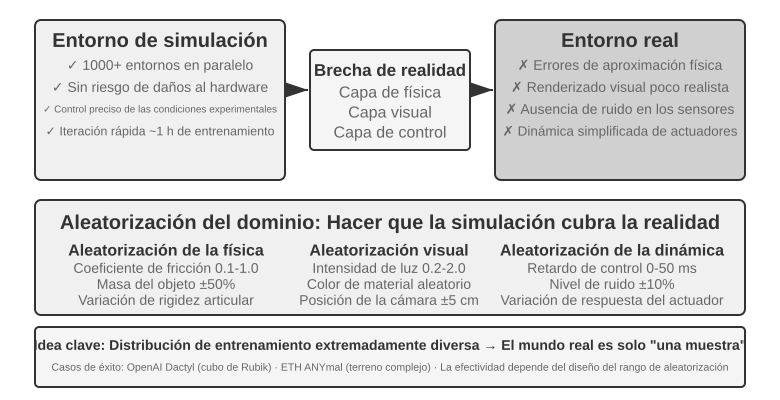
Existen numerosos casos de éxito en esta ruta: la manipulación diestra de manos mecánicas de OpenAI (el proyecto Dactyl logró la reorientación de cubos dentro de la mano, y su trabajo posterior logró resolver el cubo de Rubik con una mano mediante aleatorización automática de dominio ADR) y ANYmal de ETH Zurich (caminata robusta de robots cuadrúpedos sobre nieve, grava y otros terrenos complejos en exteriores) pertenecen a esta categoría.
Lo que realmente debe aportar este capítulo son los dos pasos de ingeniería ineludibles al aterrizar la aleatorización de dominio en máquinas reales. El primero es la calibración del rango de aleatorización: el rango no se puede fijar al azar; si es demasiado estrecho no cubrirá los cambios reales, y si es demasiado amplio aumentará la dificultad de entrenamiento, aprendiendo políticas subóptimas que "pueden lidiar con todo pero no son expertas en nada". En la práctica, se suele medir y calibrar la distribución de parámetros clave a partir de datos del entorno real (como la distribución real del coeficiente de fricción y la latencia de respuesta de los motores), muestreando dentro de ese rango; si la política entrenada en simulación cae notablemente en la máquina real, se amplía gradualmente el rango de aleatorización hasta que la brecha sim-to-real converja a un nivel aceptable. El segundo es el alineamiento visual: calibrar con precisión la pose de la cámara en simulación y en la realidad (alineamiento de entorno), y reemplazar aleatoriamente fondos fotografiados en el entorno real dentro del renderizado de simulación (reemplazo de fondo greenscreen), haciendo que la imagen de simulación se asemeje lo más posible a lo que ve la máquina real (estos dos pasos se demostrarán concretamente en el Experimento 9-10).
Experimento 9-10 ★★★: Agarre robótico Sim2Real RGB zero-shot
Utilizando LeRobot + el simulador ManiSkill, se entrena usando únicamente imágenes de cámaras RGB (sin depender de sensores de profundidad ni sensores de fuerza), desplegándose directamente sin ajustes adicionales (zero-shot) en el brazo robótico real SO100. Flujo de cinco pasos:
- Alineamiento de entorno: Ajustar la posición de la cámara en la simulación y en el entorno real, verificando mediante superposición visual que las imágenes de ambos lados se alineen.
- Reemplazo de fondo (greenscreen): Recortar aleatoriamente imágenes de fondo tomadas del entorno real y superponerlas en el renderizado de simulación, acercando el fondo de las imágenes de simulación a la realidad.
- Aleatorización de dominio (Domain randomization): Aleatorizar parámetros como color del robot, textura de los objetos, condiciones de iluminación y campo de visión de la cámara.
- Entrenamiento con RL: Entrenar usando el algoritmo PPO en entornos de simulación masivamente paralelos hasta alcanzar una tasa de éxito >90% en simulación.
- Despliegue real: Lograr con éxito la tarea de agarre directamente en el robot real de forma zero-shot.
Elementos clave para el éxito: Alineamiento preciso del entorno + aleatorización de dominio visual + aleatorización de parámetros físicos, indispensables los tres. Limitaciones: Cuando la forma, tamaño o material de los objetos reales excede la distribución de entrenamiento, la tasa de éxito disminuye significativamente 11.
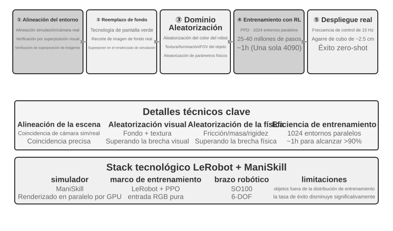
Resumen del capítulo¶
Aunque los tres escenarios parecen muy diferentes en la superficie, los dos obstáculos de la latencia y la multimodalidad siempre están presentes. La voz ha recorrido un camino evolutivo desde pipelines seriales hacia extremo a extremo y full-duplex, y desde el pensamiento rápido/lento separado hacia "pensar mientras se habla"; Computer Use ha alcanzado una precisión cercana a la humana en benchmarks como OSWorld, pero la brecha de eficiencia manifestada en una cantidad notablemente mayor de pasos de operación y en el crecimiento continuo del tiempo consumido por paso aún no cuenta con una solución sistemática; en el caso de los robots en tareas de manipulación basadas principalmente en retroalimentación visual, el cuello de botella ha pasado del hardware a la capacidad de generalización multitarea de la capa de control VLA (siendo el tacto y las manos diestras deficiencias de hardware aún no conquistadas). El siguiente capítulo ampliará la perspectiva a la colaboración entre múltiples Agentes, lo que constituye un desafío en otra dimensión.
Preguntas de reflexión¶
- ★★ El modelo de extremo a extremo de los Agentes de voz combina ASR-LLM-TTS en un solo modelo, lo que reduce la latencia pero pierde modularidad. Si el modelo de extremo a extremo comete un error en alguna etapa (como el reconocimiento de voz), la depuración y reparación es mucho más difícil que en un pipeline serial. ¿Cómo diseñarías el sistema de observabilidad (observability) para un Agente de voz de extremo a extremo?
- ★ Step-Audio R1 logra "pensar mientras se habla" mediante la arquitectura de doble cerebro MPS. Sin embargo, los seres humanos a menudo dicen palabras sin pensar profundamente, se autorcorrigen o utilizan muletillas al "pensar mientras hablan". ¿Debería el "pensar mientras se habla" de un Agente imitar estas características humanas?
- ★★ SoM (Set-of-Mark) y sus variantes estructuradas (índice de elementos DOM) convierten el grounding visual de Computer Use de una predicción de coordenadas abierta a una selección de ID cerrada, pero ambos requieren detectar y etiquetar previamente los elementos de la interfaz, ya sea mediante modelos de segmentación o mediante el DOM. Si la interfaz contiene controles no estándar o elementos dinámicos, la anotación puede ser incompleta o inexacta. En este caso, ¿se debería recurrir a la predicción de coordenadas?
- ★★ Plataformas robóticas del orden de mil dólares como XLeRobot hacen que la recopilación de datos de teleoperación sea económica. Sin embargo, la calidad de los datos de teleoperación depende en gran medida de la habilidad del operador. ¿Cómo afectará el entrenamiento del modelo VLA los datos proporcionados por un operador no experimentado? ¿Cómo filtrar automáticamente datos de baja calidad durante la etapa de recopilación?
- ★★★ Este capítulo abarca tres formas de interacción: voz, Computer Use y robótica. La tendencia común de estas tres formas es evolucionar de pipelines seriales hacia modelos de extremo a extremo. Si esta tendencia continúa, ¿cómo será la capa de interacción de los Agentes dentro de cinco años?
- ★★★ El Computer Use actual funciona en un bucle discreto de "captura de pantalla → acción → captura de pantalla", donde cada observación es un fotograma estático. Sin embargo, la percepción humana de la pantalla es continua: podemos ver animaciones, observar el progreso de carga y comprender contenidos de video. Esto significa que el Computer Use de hoy es incapaz de manejar tareas que requieren comprensión visual temporal. ¿Cómo se debería rediseñar la capa de percepción para admitir la comprensión de flujos visuales continuos?
- ★★ El índice de elementos DOM/Accessibility Tree produce efectos notables en aplicaciones Web estándar, pero cada vez más interfaces de software (renderizado en Canvas/WebGL, controles autodibujados multiplataforma) no proporcionan información estructurada accesible, teniendo que depender únicamente de la anotación visual o la predicción de coordenadas. ¿Crees que Computer Use debería apostar por una ruta puramente visual, o mantener simultáneamente dos vías, estructurada y visual? ¿Cuáles son los costos y beneficios de mantener ambas vías?
- ★★ Los modelos VLA adoptan la fragmentación de acciones (action chunking); como se menciona en el texto principal, la configuración típica de π₀ es generar de una vez entre 25 y 50 acciones futuras a una frecuencia de 50 Hz, ocultando la latencia de inferencia en el tiempo de ejecución. Sin embargo, si el entorno cambia repentinamente durante la ejecución (por ejemplo, si se retira un objeto), la secuencia de acciones pregenerada quedará invalidada. ¿Cómo equilibrar la ventaja de eficiencia de la fragmentación de acciones con la velocidad de respuesta ante cambios en el entorno?
- ★★★ Los tres escenarios de este capítulo (voz, Computer Use y robótica) enfrentan el problema de latencia en el bucle "Percepción-Pensamiento-Acción", evolucionando todos hacia la paralelización del pensamiento rápido y lento. En el escenario de voz, esto se manifiesta como "corregir tras hablar mal"; en el escenario de Computer Use, se manifiesta como "hacer clic primero y mirar después"; en el escenario robótico, se manifiesta como "dar un paso y observar". ¿Cómo garantizar que estas acciones basadas en el pensamiento rápido no causen consecuencias irreversibles?
-
OpenAI. Introducing GPT-Live. 2026-07-08. https://openai.com/index/introducing-gpt-live/ . La clasificación en tres partes "Cascada / Basado en turnos / Full-Duplex" de esta sección proviene del resumen de dicho artículo sobre la evolución de tres generaciones de voz en ChatGPT; el término "Omnimodal de extremo a extremo (Omni)" en el texto se corresponde con la categoría "turn-based voice models" en dicho artículo. ↩
-
La integración del juicio de turno en el reconocedor y el diagnóstico de la "perspectiva divina en las etiquetas" se encuentran en Li, Bojie y Noah Shi. The Trade-off Was in the Labels: Causal Supervision for Turn-Aware Streaming ASR. 2026 (pendiente de publicación). ↩
-
La comparación completa de la precisión entre cascada y extremo a extremo y cómo predecir su dirección según la naturaleza de la tarea (si la representación intermedia puede transportar completamente la información relevante) se encuentra en Li, Bojie y Noah Shi. The Cascade Gap: When and Why Self-Cascades Help Multimodal Agents. 2026 (pendiente de publicación). ↩
-
Thinking Machines Lab, “Interaction Models: A Scalable Approach to Human-AI Collaboration,” 2026-05. https://thinkingmachines.ai/blog/interaction-models/ ↩
-
El análisis completo sobre el entrenamiento exclusivo de un puente de espacio latente entre dos modelos congelados y "cuándo vale la pena consultar a un asesor lento" se encuentra en Li, Bojie y Noah Shi. The Latent Bridge: A Continuous Slow-Fast Channel for Real-Time Game Agents. arXiv:2606.24470, 2026. ↩↩
-
Los detalles de los fotogramas clave controlados por puerta, la transcripción a pedido y la narración de fotogramas en texto persistente, así como la mecánica completa y las ablaciones por modelo, se encuentran en Li, Bojie y Noah Shi. Agent-Computer Observation Interfaces Enable Dynamic Computer Use. arXiv:2606.29472, 2026. ↩
-
El diseño completo del desacoplamiento rápido-lento entre voz y operación y el "contrato de texto puro" se encuentra en Li, Bojie y Noah Shi. Talking While Acting: Real-Time Voice for Slow Computer-Use Agents. 2026 (pendiente de publicación). ↩
-
XLeRobot, “Documentación de Teleop”. https://xlerobot.readthedocs.io/en/latest/software/getting_started/XLeRobot_teleop.html ↩
-
Google DeepMind, “Gemini Robotics-ER 1.5”. https://deepmind.google/models/gemini-robotics/gemini-robotics-er/ ↩
-
XLeRobot, “Control de LLM Agent”. https://xlerobot.readthedocs.io/en/latest/software/getting_started/LLM_agent.html ↩
-
LeRobot, “Tutorial Sim2Real”. https://github.com/StoneT2000/lerobot-sim2real/blob/main/docs/zero_shot_rgb_sim2real.md ↩